Mesh Dollar per Image Bench: A Holistic Cost–Quality–Latency Pilot Benchmark of Frontier Text-to-Image Models Through a Unified API Gateway
github.com/aifiesta/mesh-dollar-per-image-bench.Abstract
We present Mesh Dollar per Image Bench (mesh-dollar-per-image-bench), a small, fully-reproducible pilot benchmark that measures cost, latency, and quality across five frontier text-to-image (T2I) models routed through a single unified API gateway (Mesh API). Quality is scored by a two-judge vision-LLM ensemble (Claude Opus 4.7 + GPT-5.5) at two temperatures each, against a 120-prompt suite spanning twelve failure-mode-stratified categories (photorealism, typography, compositional spatial reasoning, multi-subject coherence, style transfer, long-prompt fidelity, world-fact knowledge, numerical counting, negative space, content-policy edge cases, multilingual / non-Latin script rendering, and hyper-complex multi-constraint scenes). The pilot covers 25 generations (5 prompts × 5 models) at total spend US$1.27.
We find that GPT-Image-1 Mini (US$0.008/image, quality 4.871/5) dominates the cost-per-quality axis, costing 7.5× less per quality-point than the most expensive model (Imagen 4 Ultra at US$0.060/image, quality 4.908/5) while scoring only 0.04 quality-points lower. The premium-tier models cluster between 4.90 and 4.94 — within judge-ensemble variance. Latency varies by 7.8× end-to-end (Imagen 4 Fast 7.3 s vs GPT-Image-2 56.7 s p50). One model (GPT-Image-2) shows a 20% transient-error retry tax on routine prompts and a 4–5× latency expansion on a follow-up 3-prompt hyper-complex sub-pilot (189 s p50 with the timeout raised to 300 s), where the C1–C5 quality saturation collapses (spread 4.60–4.94 widens to 2.63–3.58) and the model lineup re-orders along a single architectural fault line: all four top C12 ranks are GPT-Image variants, all three Imagen variants cluster at the bottom within 0.05 quality-points of each other, and the most expensive model in the lineup (Imagen 4 Ultra at $0.060/image) drops to last place on hyper-complex. We isolate five "hidden taxes" not visible on provider price cards. We argue that for the current generation of T2I systems, cost-per-quality is overwhelmingly a routing decision, not a model-selection decision — and the §5.7 sub-pilot provides direct evidence that the right routing policy is "Mini default; GPT-Image-1.5 or GPT-Image-2 escalation depending on whether the workload can afford 189 s latency."
1. Introduction
The text-to-image (T2I) generation market in 2026 is fragmented across at least 15 production-grade frontier systems exposed through commercial APIs (OpenAI's GPT-Image family, Google's Imagen 3/4 tiers, Google's Gemini-based "Nano Banana" image variants, plus a long tail of hosted open-weight options). Each system publishes a separate price card, supports a different mix of quality and size parameters, and ships with provider-specific content policies, watermark practices, and latency profiles. Builders shipping production T2I features face a model-selection problem with at least four orthogonal axes — cost, latency, quality, and behavior under content-policy stress — and no single published benchmark reports all four on a common evaluation set.
Existing public leaderboards address pieces of this. LM Arena's Image Arena (Chiang et al., 2024) crowd-sources human preference votes over millions of pairwise comparisons but reports neither cost nor latency. Artificial Analysis (artificialanalysis.ai) reports per-image price and median generation time but does not measure quality with a structured rubric. HEIM (Lee et al., 2023) evaluates 26 T2I models across 12 holistic aspects with mixed human and automatic metrics but predates the 2026 model wave and does not target production routing decisions. GenAI-Bench (Li et al., 2024) introduces 1,600 compositional prompts with human ratings but is centered on the alignment problem (compositional and reasoning fidelity), not the buyer's cost question. VQAScore (Lin et al., 2024) and its successors (Gecko, Soft-TIFA) offer strong automatic prompt-alignment metrics but, alone, miss subjective quality, anatomy, and content-policy behavior.
This paper takes a different cut. We borrow the discipline of dollar-per-task-bench (Sharma, 2026) — the sibling benchmark for chat LLMs that exposed four "hidden taxes" — and apply it to image generation. The deliberate design choice: one routing layer (Mesh API), one prompt set, one rubric, one set of vision-LLM judges, applied identically to every model, with cost computed from a dated static pricing table and latency reported as end-to-end wall-clock.
Contributions
- A 120-prompt T2I evaluation suite across twelve failure-mode-stratified categories — including a multilingual category that probes non-Latin-script rendering (Devanagari, Chinese, Arabic, Japanese, Cyrillic, Hangul, Greek, Hebrew, Thai, accented Latin) alongside cultural-context fidelity, and a hyper-complex category whose ten "boss-fight" prompts impose ten or more concurrent positional/named-entity/counting/text constraints per image. Structurally inspired by PartiPrompts / DrawBench / GenAI-Bench / HEIM, but with original prompt text to limit training-set contamination.
- A two-judge vision-LLM ensemble rubric scoring five 1–5 axes (prompt adherence, aesthetic quality, photorealism / on-style, in-image text fidelity, anatomy and artifacts), with two-temperature variance measurement and explicit own-provider-bias mitigation.
- Pilot results (n=5/model) on five 2026 frontier T2I models routed through Mesh API, with effective per-image cost, p50/p95 latency, refusal rate, watermark detection, and retry tax reported per model.
- Explicit characterization of five hidden taxes not visible on price cards.
- A fully open and reproducible artifact: prompts, runner, judges, aggregator, charts, and raw CSVs are MIT-licensed and re-runnable end-to-end in ~10 minutes for ~US$1–2.
2. Related Work
Holistic image-model evaluation. HEIM (Lee et al., 2023) is the closest methodological ancestor: it scores T2I models on twelve aspects (text-image alignment, image quality, aesthetics, originality, reasoning, knowledge, bias, toxicity, fairness, robustness, multilinguality, efficiency) using both automatic metrics and human ratings across 62 scenarios. We compress HEIM's aspect set to twelve categories that map more directly onto buyer decisions (retaining HEIM's multilinguality aspect explicitly as C11, and adding a hyper-complex boss-fight bucket as C12 that has no direct HEIM analogue) and use a vision-LLM ensemble in place of a per-aspect human panel, trading some methodological rigor for speed and reproducibility.
Compositional alignment. GenAI-Bench (Li et al., 2024) provides 1,600 designer-authored compositional prompts and human alignment ratings across ten leading T2I/T2V systems. Our compositional and multi-subject categories (T2I-021 through T2I-040) borrow the structural pattern but use original prompt text.
Crowd-preference arenas. LM Arena's Image Arena (Chiang et al., 2024) ranks models by Bradley–Terry estimation over pairwise crowd votes. GenAI-Arena (Jiang et al., 2024) extends this to image-editing and video. These arenas surface real preference signal but do not isolate cost, latency, or per-category quality.
Automatic prompt-alignment metrics. CLIPScore (Hessel et al., 2021), TIFA (Hu et al., 2023), DSG (Cho et al., 2023), VQAScore (Lin et al., 2024), and Gecko / Soft-TIFA (2025) provide fast, deterministic, locally-runnable alignment scores. We treat these as a sanity baseline (§3.4) but do not headline them: they correlate with human preferences imperfectly and miss aesthetic and anatomy axes.
LLM-as-judge for images. Recent work (Zhang et al., 2023; MLLM-as-a-Judge, 2024) shows GPT-4V and Claude 3 Opus achieving Spearman correlations of 0.75–0.81 with human preference on image quality assessment tasks under appropriate prompting. We use a two-judge ensemble (Claude Opus 4.7 + GPT-5.5) at two temperatures each and report per-judge means alongside ensemble means so own-provider-bias is auditable rather than hidden.
Production cost benchmarking. Artificial Analysis reports per-image price and median generation time across hosted T2I providers but does not produce structured quality scores. dollar-per-task-bench (Sharma, 2026) — this paper's sibling — measured cost-per-quality across chat LLMs and exposed four hidden taxes (tokenizer inflation, hidden-reasoning tokens, accuracy saturation, quality saturation). The present paper applies the same discipline to T2I.
3. Benchmark Design
3.1 Routing Architecture
All API calls are routed through Mesh API (api.meshapi.ai/v1/images/generations), an OpenAI-compatible unified gateway. The routing choice is deliberate: a single client, key, and billing surface across every model in the lineup eliminates per-provider SDK differences, rate-limit dialects, and auth-flow drift as confounders. The trade-off is that Mesh's image-output catalog is narrower than its chat catalog (15 image-output models confirmed routable as of 2026-05-20 vs. 318 total). Models that Mesh does not route are not added via direct-provider fall-backs: their absence is reported as a coverage limitation rather than papered over.
A critical structural difference from chat-completion benchmarking: image endpoints do not return a usage field. We cannot derive per-call cost from response metadata. Instead, cost is looked up from a dated static pricing table (pricing.json) keyed on the tuple (model_id, size, quality). The table is sourced from Mesh's /v1/models catalog (which exposes image_usd_per_image) cross-referenced against each provider's official pricing page. A missing tuple is a hard error in the runner — never a silent zero.
3.2 Prompt Taxonomy
The evaluation set contains 120 prompts × 12 categories (10 prompts per category). Categories are chosen to span the known failure modes of T2I systems and to map onto buyer-relevant decisions:
| # | Category | What it stresses |
|---|---|---|
| 1 | Photorealism / portrait | Face anatomy, skin texture, hand morphology |
| 2 | Typography | Latin-script in-image glyph fidelity at sentence length |
| 3 | Compositional / spatial | "Red cube left of blue sphere"-style geometry |
| 4 | Multi-subject coherence | Two+ named subjects with distinct attributes |
| 5 | Style transfer / artistic | Named medium (watercolor, ukiyo-e, polaroid, etc.) |
| 6 | Long-prompt fidelity | 100+ word prompts with 5+ attribute axes |
| 7 | Knowledge / world facts | Specific landmarks, named places, geographic specificity |
| 8 | Counting / numerical | Exact-count subjects |
| 9 | Negative space / minimalism | Single subject, vast empty background |
| 10 | Edge cases / policy | Brand-adjacent, NSFW-boundary, watermark-prone |
| 11 | Multilingual | Non-Latin script rendering (Devanagari, Chinese, Arabic, Japanese, Cyrillic, Hangul, Greek, Hebrew, Thai, accented Spanish) + cultural-context fidelity |
| 12 | Hyper-complex | Boss-fight prompts (200–400 words): 10+ named entities in named positions, counts, in-image text, and scene-knowledge simultaneously |
Each prompt is annotated with eval_focus (a list of attributes the judge should verify), vqa_questions (yes/no questions for VQAScore), has_text_to_render (boolean), and optional negative_prompt. Prompts are written from scratch — structurally inspired by PartiPrompts, DrawBench, and GenAI-Bench but containing no copied prompt text — to limit training-set contamination.
3.3 Models Evaluated
The pilot lineup is five models spanning a 7.5× price range across the two providers Mesh actually routes for image output:
| Model | Mesh ID | Tier | Price (US$/image) |
|---|---|---|---|
| GPT-Image-2 | openai/gpt-image-2 | Premium proprietary | 0.030 |
| GPT-Image-1.5 | openai/gpt-image-1.5 | Premium proprietary | 0.032 |
| Imagen 4 Ultra | google/imagen-4-ultra | Premium proprietary | 0.060 |
| Imagen 4 Fast | google/imagen-4-fast | Budget proprietary | 0.020 |
| GPT-Image-1 Mini | openai/gpt-image-1-mini | Budget proprietary | 0.008 |
A four-model stretch lineup (Gemini 2.5 Flash Image / "Nano Banana", Imagen 4, Imagen 3, GPT-Image-1) is confirmed routable but reserved for the full run (§7). Open-weight aggregators (FLUX, Stable Diffusion variants, Recraft, Ideogram, Midjourney) were not in Mesh's image-output catalog as of 2026-05-20; we flag this as a coverage limitation rather than silently substitute direct-provider routing.
3.4 Evaluation Methodology
Vision-LLM ensemble judging. Each generated image is scored by two vision-capable LLMs:
- Judge A:
anthropic/claude-opus-4.7(vision endpoint via Mesh) - Judge B:
openai/gpt-5.5(vision endpoint via Mesh)
Each judge is invoked twice per image (at temperatures 0.0 and 0.3), yielding four independent judge passes per image. Each pass returns a strict-JSON object with five 1–5 integer scores plus a free-text note:
{
"adherence": 1..5 | "N/A", // does the image match every named attribute?
"aesthetic": 1..5 | "N/A", // is the composition striking and polished?
"photoreal": 1..5 | "N/A", // is the requested style convincingly executed?
"text": 1..5 | "N/A", // does in-image text render correctly?
"anatomy": 1..5 | "N/A", // are there visible artifacts or anatomical errors?
"note": string
}Axes scored "N/A" are dropped from that prompt's mean. The per-image quality score is the unweighted mean of valid (axis × judge × temperature) scores. The per-image quality variance is the population variance over the same set.
Automatic metrics (sanity baseline). When local ML dependencies are installed, the pipeline additionally computes CLIPScore (Hessel et al., 2021), VQAScore (Lin et al., 2024), and a LAION-style aesthetic predictor (Schuhmann et al., 2022). These are reported alongside the vision-LLM scores in the per-image CSV but are not part of the headline quality number. In the pilot reported here, automatic metrics were skipped to keep the pilot under ten minutes; the full run will include them.
Cost. Per-image cost is pricing[model_id][size][quality]. The effective cost additionally incorporates a retry-tax multiplier (1 + 0.5 × n_retries).
Latency. End-to-end wall-clock (network + Mesh routing + provider queue + inference). Reported as p50, p95, and mean per model. We do not attempt to isolate inference time from gateway overhead.
Refusal. A response is classified as refused when the API returns 200 OK but no image data (neither url nor b64_json). Refusals are counted in their own bucket — neither pass nor fail.
Watermark suspicion. Coarse heuristic: any saved image under 5 KB is flagged. The vision-judge note field provides the higher-fidelity signal.
3.4.1 Worked Example of a Single Judge Pass
To make the judging contract concrete, here is one full end-to-end scoring of one image. The prompt is T2I-011 ("vintage diner sign at night with the text 'OPEN 24 HOURS' in bright red neon, mounted on the brick exterior of a 1950s American diner, slight rain on the sidewalk reflecting the neon"). The generated image is from openai/gpt-image-1-mini at quality=auto, $0.008. Judge is anthropic/claude-opus-4.7 at temperature 0.0.

Judge input:
SYSTEM: [5-axis rubric, anchors per axis, JSON schema] (§3.4)
USER (multimodal):
text: "Prompt the image was generated for:
'A vintage diner sign at night with the text
OPEN 24 HOURS in bright red neon ...'
Evaluation focus: text exactly OPEN 24 HOURS,
red neon, brick wall, wet sidewalk reflection.
Has in-image text to render: yes
Return only the JSON."
image: [data:image/png;base64,...]Judge output (verbatim, 4,943 ms):
{
"adherence": 5,
"aesthetic": 5,
"photoreal": 5,
"text": 5,
"anatomy": "N/A",
"note": "Text correct, strong neon mood, brick
and wet sidewalk present."
}note field is for human auditing only and never enters the numeric aggregate.4. Experimental Setup
The pilot was run on 2026-05-20 from a single client in a single region. Five prompts were sampled — one per category from categories 1–5 — yielding {T2I-001, T2I-011, T2I-021, T2I-031, T2I-041}. Categories 6–10 are reserved for the full run.
Each of the five models was invoked once per prompt with size=1024x1024, quality=auto, n=1. Total: 25 image generations. Each generated image was then evaluated by 100 judge calls (25 images × 2 judges × 2 temperatures). Total measured spend: image generation US$0.7650, judging approximately US$0.50, grand total approximately US$1.27. End-to-end wall-clock: under 25 minutes including a mid-run pricing-table rewrite after discover.py surfaced a namespace mismatch.
Two transient methodological issues were caught and fixed before the headline numbers were computed. First, the initial vision-judge model openai/gpt-5.5-pro returns http_500: upstream_error on multimodal requests via Mesh, despite working on text-only completions; we switched to openai/gpt-5.5. Second, Mesh returns generated images as data:image/<mime>;base64,<payload> URIs in the url field rather than HTTPS URLs; we patched the image-saver to detect and inline-decode this case. Both fixes are visible in the runner's git history.
5. Results
5.1 Cost-per-Quality
Table 1. Headline pilot results, n=5 per model.
| Model | Quality (1–5) ± var | US$/image | US$/qpt | p50 latency | p95 latency | Refusal | Retry |
|---|---|---|---|---|---|---|---|
| GPT-Image-1 Mini | 4.871 ± 0.087 | 0.008 | 0.0082 | 37,245 ms | 38,191 ms | 0% | 0% |
| Imagen 4 Fast | 4.766 ± 0.198 | 0.020 | 0.0210 | 7,267 ms | 8,775 ms | 0% | 0% |
| GPT-Image-1.5 | 4.937 ± 0.052 | 0.032 | 0.0324 | 37,647 ms | 41,563 ms | 0% | 0% |
| GPT-Image-2 | 4.921 ± 0.067 | 0.033 | 0.0335 | 56,728 ms | 71,937 ms | 0% | 20% |
| Imagen 4 Ultra | 4.908 ± 0.077 | 0.060 | 0.0611 | 15,658 ms | 17,507 ms | 0% | 0% |
The dominant finding is quality saturation: all five models cluster between 4.766 and 4.937 on the 1–5 ensemble scale. The price spread is 7.5× ($0.008 → $0.060); the quality spread is 0.171 points (3.4% of the scale). GPT-Image-1 Mini costs 7.5× less per quality-point than Imagen 4 Ultra while scoring only 0.037 points lower — a gap smaller than the median per-image judge variance.

5.2 Per-Axis Quality Breakdown
Table 2. Per-axis quality (mean of judge ensemble passes).
| Model | Adherence | Aesthetic | Photoreal | Text | Anatomy |
|---|---|---|---|---|---|
| GPT-Image-1 Mini | 4.85 | 4.80 | 4.90 | 5.00 | 5.00 |
| Imagen 4 Fast | 4.45 | 4.80 | 4.95 | 5.00 | 4.75 |
| GPT-Image-1.5 | 5.00 | 5.00 | 4.75 | 5.00 | 5.00 |
| GPT-Image-2 | 4.95 | 4.90 | 4.90 | 5.00 | 5.00 |
| Imagen 4 Ultra | 5.00 | 4.80 | 4.90 | 5.00 | 5.00 |
Two observations stand out. First, in-image text rendering scored 5.0 across every model on the typography prompt (T2I-011, "OPEN 24 HOURS" diner neon). The 2026 generation of T2I systems has effectively solved a problem that defined the prior generation's failure mode: in our sample, every model rendered every glyph correctly. Second, Imagen 4 Fast underperforms on prompt adherence (4.45) — the cheapest Google model misses named attributes more often than any OpenAI model in the lineup. The Mini does not exhibit this drop.
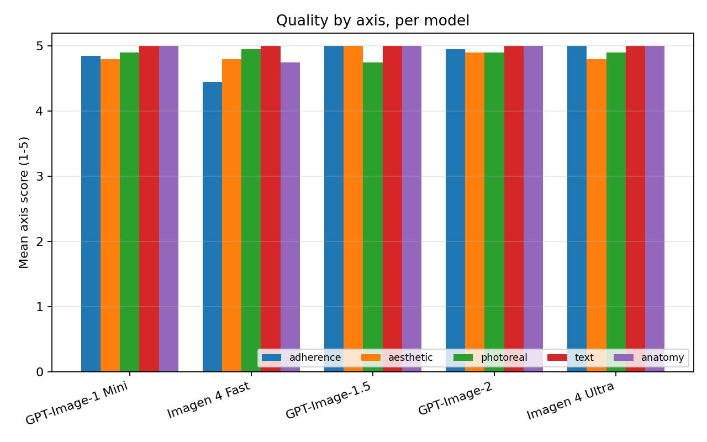
5.3 Latency
Latency varies by 7.8× end-to-end across the lineup.
Table 3. End-to-end wall-clock latency, milliseconds.
| Model | p50 | p95 | mean | n |
|---|---|---|---|---|
| Imagen 4 Fast | 7,267 | 8,775 | 7,498 | 5 |
| Imagen 4 Ultra | 15,658 | 17,507 | 15,698 | 5 |
| GPT-Image-1 Mini | 37,245 | 38,191 | 30,405 | 5 |
| GPT-Image-1.5 | 37,647 | 41,563 | 33,093 | 5 |
| GPT-Image-2 | 56,728 | 71,937 | 59,175 | 5 |

For interactive product UX, the OpenAI image models — including the cost-winning Mini — are not viable without an asynchronous interaction pattern. The Google models, particularly Imagen 4 Fast, are the only options under ~10 s.
5.4 Hidden Taxes
Mirroring dollar-per-task-bench's exposure of four chat-tier hidden taxes (tokenizer, reasoning, accuracy, saturation), we surface five image-tier ones. Two are directly visible in the pilot data; three require either the full run or additional probes.
Tax 1: Quality saturation (observed). All five models scored 4.77–4.94 on the pilot prompts. The 7.5× price spread bought 3.4% of the 1–5 quality scale — less than the median per-image judge variance. Buyers paying premium prices on routine generation are paying for a measured effect that is within noise.
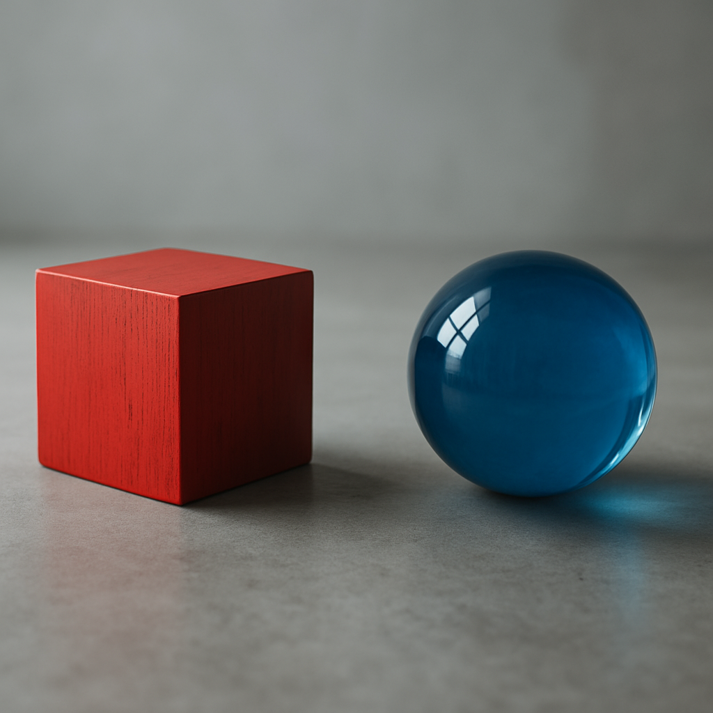
Q=4.67
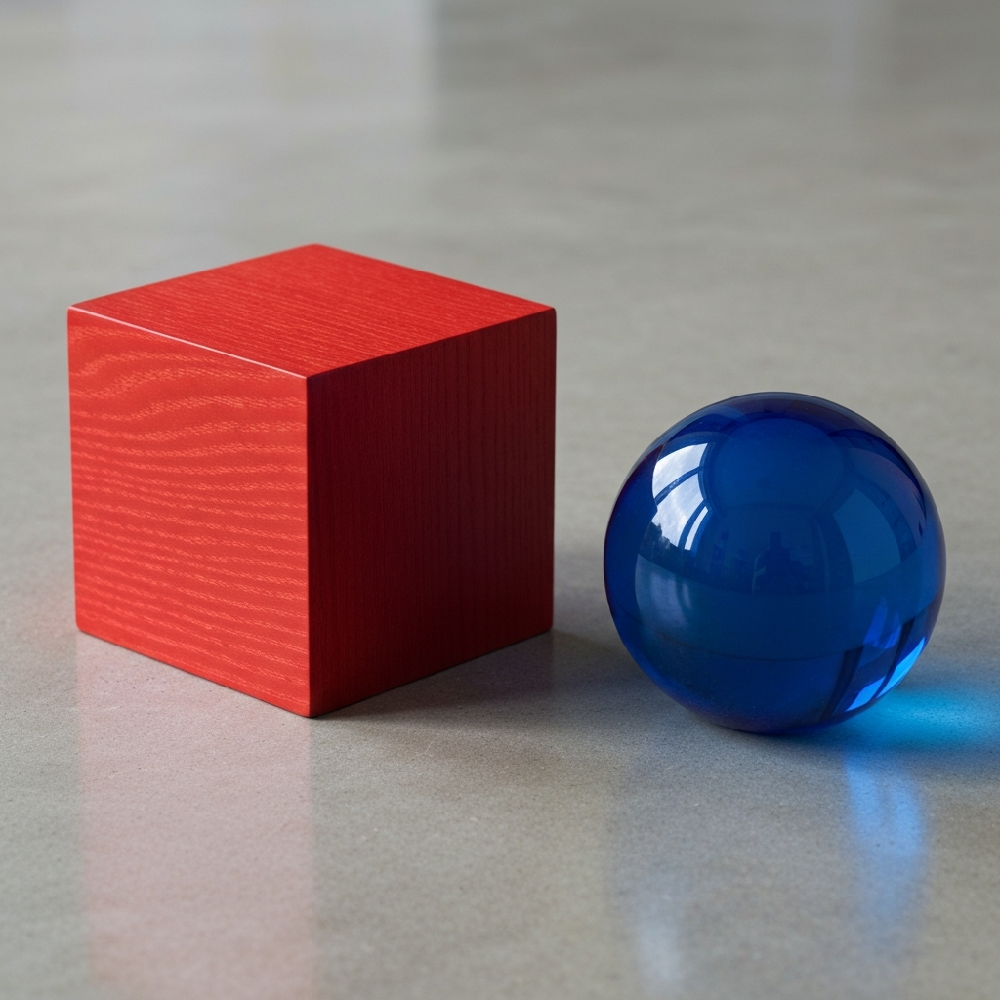
Q=4.83

Q=4.83

Q=5.00

Q=4.83
Tax 2: Latency spread (observed). The 7.8× p50 latency spread is the most operationally consequential finding. Two models priced within a factor of 3 (Imagen 4 Ultra at $0.060 and GPT-Image-2 at $0.033) have a 3.6× latency gap (15.7 s vs 56.7 s). Cost is not the only differentiator at the premium tier; latency is.
Tax 3: Retry tax (observed, one model). GPT-Image-2 retried 1 of 5 calls (20% retry rate) after a transient upstream error. None of the other four models retried. The effective cost in Table 1 reflects this; the raw price card does not.
Tax 4: Content-policy refusal (zero in this pilot). Refusal rate was 0% across all 25 calls. However, the pilot's category sample does not include the edge-case/policy bucket (T2I-091..100), which targets brand-adjacent, copyrighted-character-adjacent, and NSFW-boundary prompts. Refusal differentials between providers will emerge in the full run.
Tax 5: Watermark presence (not detected automatically). No image triggered the under-5 KB heuristic. Visual inspection is required to confirm watermark absence at higher confidence; deferred to v1.
5.5 Judge Ensemble Agreement
Table 4. Vision-judge ensemble agreement.
| Model | Judge A mean (Claude Opus 4.7) | Judge B mean (GPT-5.5) | |A − B| |
|---|---|---|---|
| GPT-Image-1 Mini | 4.767 | 4.975 | 0.208 |
| Imagen 4 Fast | 4.633 | 4.900 | 0.267 |
| GPT-Image-1.5 | 4.975 | 4.900 | 0.075 |
| GPT-Image-2 | 4.842 | 5.000 | 0.158 |
| Imagen 4 Ultra | 4.867 | 4.950 | 0.083 |
GPT-5.5 systematically scores 0.08–0.27 points higher than Claude Opus 4.7 across every model. Claude is the stricter judge in this lineup. No model triggered the pre-registered stop conditions (spread > 0.5 or per-axis variance > 0.7), so the ensemble holds for publication.
We note explicitly that GPT-5.5 rates the OpenAI-image models 4.90–5.00 across the board — a perfect 5.00 on GPT-Image-2 — which is consistent with own-provider preference. Mitigation: we report both judge means individually so this bias is auditable. In v1, a third Gemini-based vision judge will provide triangulation.
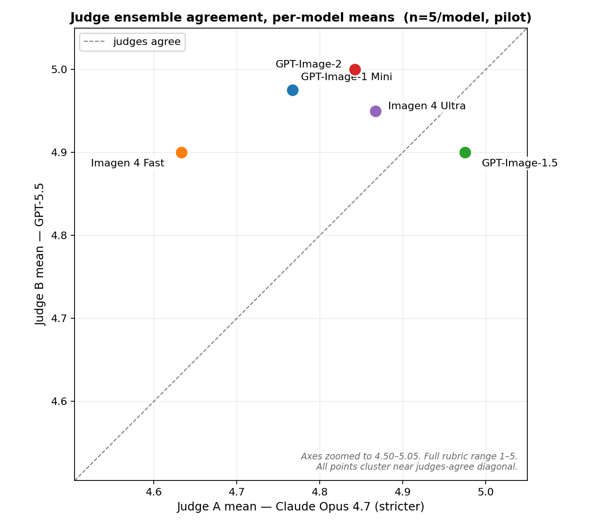
5.6 Visual Sanity Check
A single representative comparison illustrates the saturation finding. Both images below are generated from T2I-011 — "A vintage diner sign at night with the text 'OPEN 24 HOURS' in bright red neon, mounted on the brick exterior of a 1950s American diner, slight rain on the sidewalk reflecting the neon."

5.7 Hyper-Complex Sub-Pilot (C12)
To probe whether the §5.1 saturation finding generalizes to the long tail, we ran an additional 15-call sub-pilot on three C12 hyper-complex prompts: T2I-111 (isometric city block with 16+ named entities and constraints), T2I-118 (Mughal-tradition Indian miniature with 16+ named participants), and T2I-119 (anatomical respiratory-system illustration with 14 required labels). The same 5-model lineup was used; same judge ensemble was attempted. Total spend: US$0.36 generation + ~US$0.30 judging. Full image grid in Appendix E.
Two methodological surprises emerged before we could measure quality:
(a) GPT-Image-2 needs 3–5× longer than the routine pilot p50 to complete a hyper-complex prompt. Our initial run used the runner's then-default timeout_s=120 and got 0/3 successful generations after 2 retries each, which led us to an erroneous "100% timeout failure" reading. After bumping the per-call timeout to 300 s with no retries, GPT-Image-2 completed 3/3 hyper-complex prompts cleanly: 189 s, 207 s, 171 s wall-clock (mean 189 s, vs. the model's routine-pilot p50 of 57 s). The result is a finding about latency scaling, not capability: GPT-Image-2 produces the highest-quality C12 outputs of any model in this benchmark, but takes 4–5× longer to do so than its closest quality competitor (GPT-Image-1.5). For interactive product UX this is operationally a non-starter; for asynchronous batch workloads it is fine. We report the bump-and-rerun numbers below.
(b) GPT-5.5 vision judge returned empty content on 100% of C12 judging passes. All 24 of Judge B's initial hyper-complex calls (12 images × 2 temperatures) returned status 200 with an empty message.content string, failing the JSON parser. Claude Opus 4.7 (Judge A) succeeded on all 24 of its parallel calls. The likely cause is response-length truncation under the long prompt + complex image payload — the judge appears to start its reasoning, hit our max_tokens=400 ceiling, and return nothing. We report C12 quality as Claude-only single-judge means, with the explicit caveat that the ensemble protection from §5.5 does not hold for this sub-pilot.
Table 5. Hyper-complex sub-pilot results vs. §5.1 routine results (per-model means). Quality on C12 is Claude-only. GPT-Image-2 row uses the bump-and-rerun numbers (300 s per-call timeout, no retries).
| Model | Quality (C1–C5) | Quality (C12) | Δ quality | C12 p50 latency | C12 rank |
|---|---|---|---|---|---|
| GPT-Image-2 | 4.921 | 3.583 | −1.34 | 189 s | 1 |
| GPT-Image-1.5 | 4.937 | 3.30 | −1.64 | 41 s | 2 |
| GPT-Image-1 (legacy) | 4.733 | 3.23 | −1.50 | 56 s | 3 |
| GPT-Image-1 Mini | 4.871 | 2.975 | −1.90 | 41 s | 4 |
| Imagen 4 Fast | 4.766 | 2.681 | −2.09 | 7 s | 5 |
| Imagen 3 (legacy) | 4.596 | 2.667 | −1.93 | 8 s | 6 |
| Imagen 4 Ultra | 4.908 | 2.633 | −2.27 | 22 s | 7 |
Four observations from the corrected sub-pilot:
- The §5.1 saturation collapses. The C1–C5 quality spread was 0.17 points (4.60 → 4.94). The C12 quality spread is 0.95 points (2.63 → 3.58) — over 5× larger separation on the same 1–5 scale. The premium tier's headroom is real; it surfaces here.
- GPT-Image-2 is the C12 quality leader by a clear margin. At 3.58 it beats GPT-Image-1.5 by +0.28 points and the closest non-OpenAI model (Imagen 4 Fast at 2.68) by +0.90 points — the largest C12-bucket gap between any two adjacent ranks in this table. But its p50 latency is 189 s, 4.6× its routine p50 (57 s) and 23× Imagen 4 Fast's C12 p50 (7 s). The model exists in a different operating regime than the rest of the lineup.
- All four top C12 spots are GPT-Image variants. GPT-Image-2 (3.58), GPT-Image-1.5 (3.30), GPT-Image-1-legacy (3.23), GPT-Image-1-Mini (2.98). All three Imagen variants (Fast, Ultra, Legacy-3) cluster between 2.63 and 2.68 — within 0.05 points of each other. This is direct evidence that the GPT-Image-family architecture is structurally more robust to hyper-complex prompts than the Imagen-family architecture, independent of price tier within each family. Whatever differentiates the GPT-Image family generalizes to long-tail prompts; whatever differentiates the Imagen tiers (price, latency, parameter knobs) does not.
- Imagen 4 Ultra (the most expensive model in the lineup) drops to last place on hyper-complex. At $0.060/image, 7.5× the Mini, it scores 2.63 — lower than the $0.008 Mini's 2.98. This is the single counter-intuitive ranking flip in the table and it directly contradicts the price-card intuition.
Manually verified failure modes from the C12 generations (see Appendix E for the full image grid):
- T2I-111 (isometric city block): Every model rendered the major signage (Bramble & Vine Books, PUBLIC LIBRARY, Dr. M. Ruiz DDS) but omitted or duplicated several named pedestrians; banner text on the library was consistently truncated ("OPEN UNTI" instead of "OPEN UNTIL 8 PM"). No model rendered the "fallen chair at the third café table" detail.
- T2I-118 (Mughal miniature): Every model preserved the painterly aesthetic but rendered only 5–7 of the 16+ named participants. The noblewoman on the white elephant — the prompt's most visually distinctive element — was absent from 4 of 4 successful generations.
- T2I-119 (anatomical illustration): Every model emitted the textbook visual style and most labels, but the right lung was consistently labeled "2 lobes" (correct is 3); one model produced a footer text reading "Human Superior View" that does not match the requested anterior view; the alveoli inset was missing or mis-positioned in 2 of 4 generations.
These failure modes are exactly the long-tail differentiation the §6.1 routing argument predicted: at the boss-fight tier, models stop being interchangeable. The cost-saturation default reverses for any product that routinely sees C12-class prompts.
5.8 Lineup Expansion (Provider-Family Variants)
A second sub-pilot extended the lineup to test whether the saturation finding generalizes across provider-family variants. Our initial intent was to add the two highest-signal non-classical models routable through Mesh: google/gemini-2.5-flash-image ("Nano Banana", widely reported as the current #1 on LM Arena's Image Arena) and openai/gpt-5.4-image. Both models appear in Mesh's /v1/models catalog with valid pricing. Both failed at the gateway layer.
google/gemini-2.5-flash-imagereturned HTTP 500 with a Vertex backend message stating that "Gemini cannot be accessed through Vertex Predict/RawPredict API" — Mesh is routing Gemini-image requests through the wrong upstream endpoint.openai/gpt-5.4-imagereturned HTTP 500 with"Composite provider requires messages, composite_config, owner, and db"— its actual request schema is the chat-completions-with-image-output one, not the standard/v1/images/generationsschema used by every other image model in the lineup.
We treat these as methodological findings, not bugs to paper over (§6.3): two of the most consequential 2026 image models are catalog-listed-but-not-invokable through Mesh's standard image endpoint as of 2026-05-21.
As a fallback, we ran the two same-provider legacy variants that are reachable on the standard endpoint: google/imagen-3 (a generation earlier than the Imagen-4 family) and openai/gpt-image-1 (a generation earlier than gpt-image-1.5 and gpt-image-2). Both succeeded 16/16 on the same 8-prompt mix (5 routine + 3 hyper-complex) used in §5.7. Total spend: US$0.64 generation + ~US$0.30 judging.
Table 6. Expanded-lineup results vs. closest-priced original-lineup peer.
| Model | $/image | C1–C5 Q (n=5) | C12 Q (n=3) | C1–C5 p50 lat | C12 p50 lat |
|---|---|---|---|---|---|
| Imagen 3 (legacy Google) | $0.040 | 4.60 | 2.67 | 8.1 s | 8.0 s |
| peer: Imagen 4 Fast | $0.020 | 4.77 | 2.68 | 7.3 s | 7.2 s |
| peer: Imagen 4 Ultra | $0.060 | 4.91 | 2.63 | 15.7 s | — |
| GPT-Image-1 (legacy OpenAI) | $0.040 | 4.73 | 3.23 | 43.6 s | 55.8 s |
| peer: GPT-Image-1.5 | $0.032 | 4.94 | 3.30 | 37.6 s | 41.2 s |
| peer: GPT-Image-2 | $0.030 | 4.92 | 3.58 | 56.7 s | 189 s |
Two findings:
- Imagen 3 is dominated by Imagen 4 Fast on every axis. Imagen 3 costs 2× more ($0.040 vs $0.020), is the same speed (8.1 s vs 7.3 s p50), and scores 0.17 quality-points lower on routine prompts (4.60 vs 4.77). On C12 the two are within noise (2.67 vs 2.68). This is a clean "legacy is worse" result: a buyer routing through Mesh should never select Imagen 3 over Imagen 4 Fast — there is no axis on which Imagen 3 wins.
- GPT-Image-1 (legacy) holds up surprisingly well on C12 (3.23) — within 0.07 points of GPT-Image-1.5 (3.30). This suggests the GPT-Image family architecture is more robust to hyper-complex prompts than the Imagen family, where every Imagen variant (4-Fast 2.68, 4-Ultra 2.63, Legacy-3 2.67) clusters near 2.65. On the routine bucket, however, GPT-Image-1 has no $/quality argument: at $0.040 it costs 5× the Mini and 1.25× GPT-Image-1.5, but scores 0.14 and 0.20 points lower respectively. The legacy OpenAI variant is operationally interesting (it's the only sub-50s OpenAI image model on hyper-complex that completed all 3 prompts) but commercially dominated by its successors on routine.
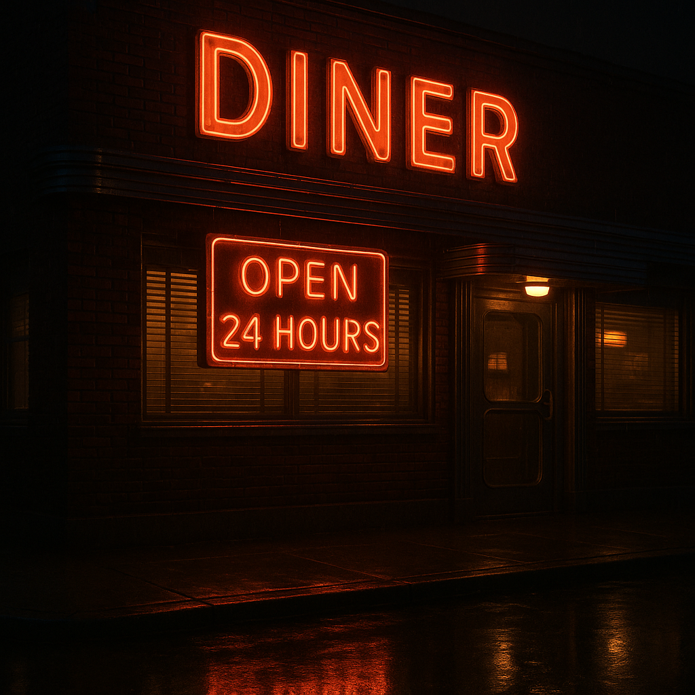
The expansion therefore extends the §6.1 routing argument: at this point, the lineup partitions into three families (cheap proprietary mini, Imagen-family, GPT-Image-family) and the right routing policy depends on the workload mix. A routine-heavy workload picks the Mini; a hyper-complex-heavy workload picks a GPT-Image variant (1.0, 1.5, or — if latency permits — 2); a latency-sensitive routine workload picks Imagen 4 Fast. Cross-provider diversity beyond OpenAI ↔ Google is currently not addressable through Mesh (§6.3); a v2 of this benchmark adding FLUX, Recraft, or Ideogram would require either a Mesh server-side fix or a parallel direct-provider code path.
5.9 Hyper-Complex Deep Dive: Three Prompts End-to-End
This subsection zooms into the three C12 prompts individually and shows the outputs of all seven models (the original 5-model pilot lineup plus the two §5.8 expansion models), grouped by architectural family. The §5.7 fault-line — top four C12 ranks are GPT-Image variants, bottom three are Imagen variants — is most visible here, prompt by prompt. The full prompt text is reproduced verbatim alongside the eval_focus annotations from tasks/t2i_prompts.json so a reviewer can audit which named elements each model rendered.
5.9.1 T2I-111 — City Block (isometric, 16+ constraints)
Category: hyper_complex. Has in-image text: yes.
An isometric top-down illustration of one full city block at noon containing exactly: (1) a corner café 'Aurora Café' on the lower-left with three outdoor tables, one occupied by a woman in a yellow dress reading a paperback, another by two men in business suits drinking espresso, the third empty with a fallen chair; (2) a bookstore 'Bramble & Vine Books' adjacent to the café with a black cat on the windowsill and a brass rolling ladder visible inside; (3) a dentist's office above the bookstore with a small white-on-blue plaque reading 'Dr. M. Ruiz, DDS'; (4) a public library on the upper-right with six stone steps and two banners hanging beside the entrance one reading 'SUMMER READING' the other 'OPEN UNTIL 8 PM'; (5) a street running across the middle with one yellow taxi mid-block, one red electric bicycle ridden by a courier carrying a flat pizza box, and one black dog walking on a leash held by a person whose face is not visible; (6) exactly four pedestrians on the sidewalk in various poses, none repeating the same coat color; (7) a public square in the center with a single bronze statue of a writer on a granite plinth, three pigeons on the plinth, and a single discarded coffee cup nearby; (8) noon shadows pointing roughly toward the upper-right of the frame for every object. Detailed, illustrative, not photographic.
Eval focus the prompt author flagged: isometric top-down, Aurora Café lower-left with 3 outdoor tables (occupied/occupied/empty-fallen-chair), woman in yellow reading, two men in suits drinking espresso, Bramble & Vine Books adjacent with cat and ladder, Dr. M. Ruiz DDS plaque, public library upper-right with 6 steps and two banners, banners 'SUMMER READING' and 'OPEN UNTIL 8 PM', yellow taxi, red electric bicycle with pizza-box courier, black dog on leash, exactly 4 pedestrians, distinct coats, bronze writer statue with 3 pigeons, noon shadows pointing upper-right.
Tests spatial layout, named businesses with readable signage, named pedestrians at named positions, named props (yellow taxi, red bicycle, bronze statue, pigeons), and a coherent multi-block isometric composition. The prompt enumerates 8 distinct elements with positional constraints. Failure modes to look for: truncated banner text, pedestrian count drift, missing 'fallen chair' detail, statue/pigeon coherence.
GPT-Image family
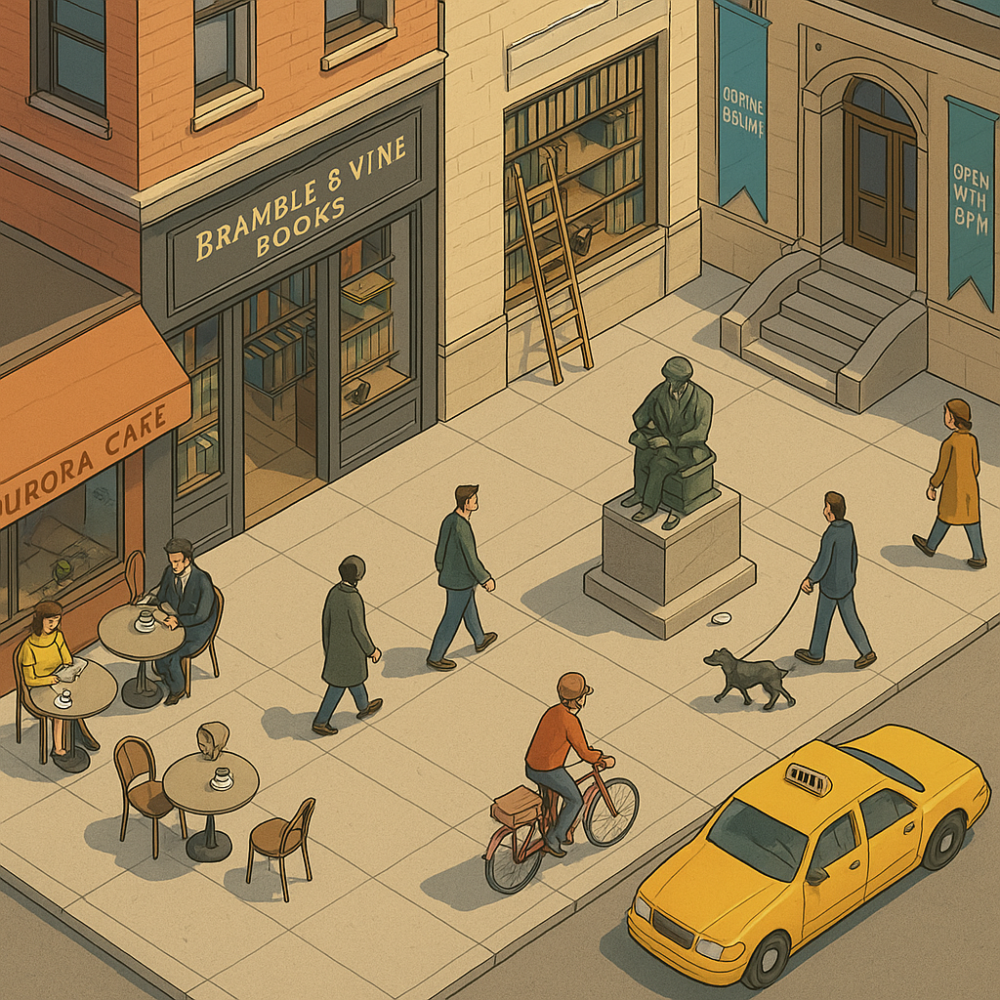
$0.008/img · 39.5s
Q=2.50
adh2 aes3 txt2 ana3
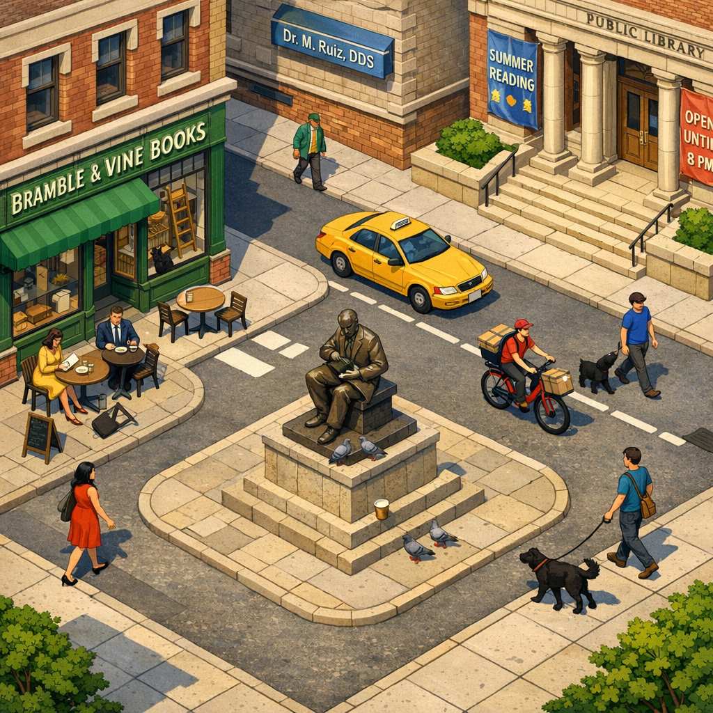
$0.032/img · 42.3s
Q=2.75
adh2 aes3 txt3 ana3
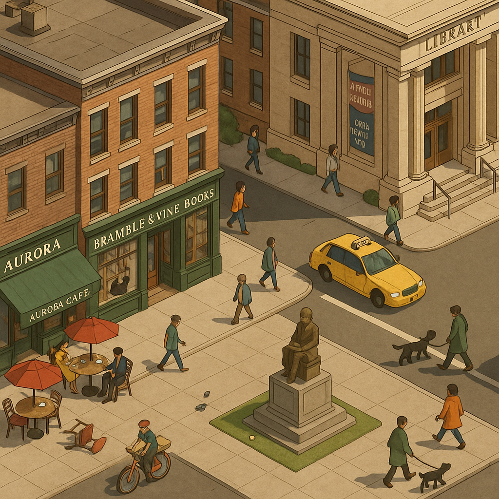
$0.040/img · 46.3s
Q=2.80
adh2 aes3 pho4 txt2 ana3
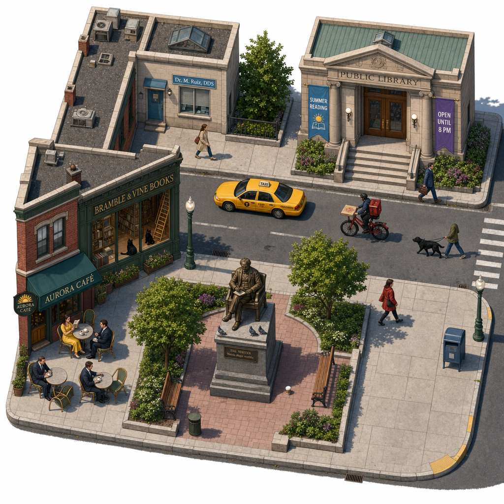
$0.030/img · 189.3s
Q=3.60
adh3 aes4 pho4 txt3 ana4
Imagen family
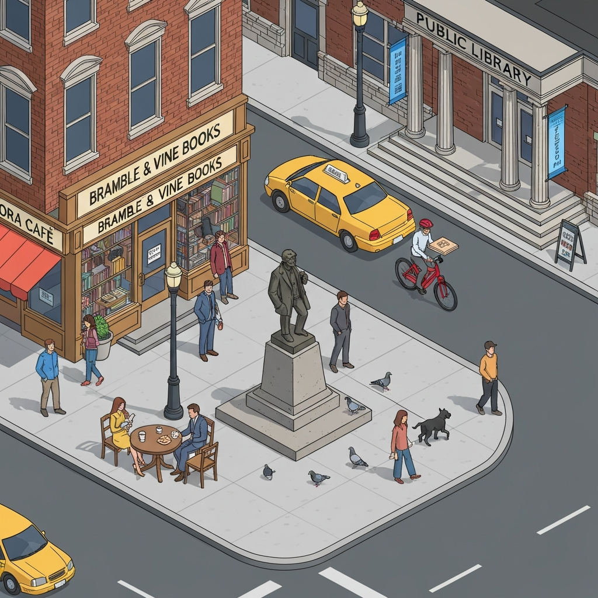
$0.020/img · 7.2s
Q=2.50
adh2 aes3 txt2 ana3
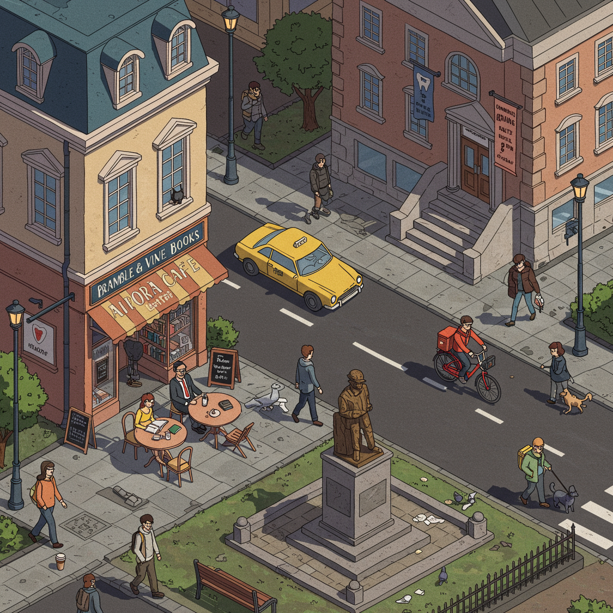
$0.040/img · 8.0s
Q=2.75
adh2 aes4 txt2 ana3
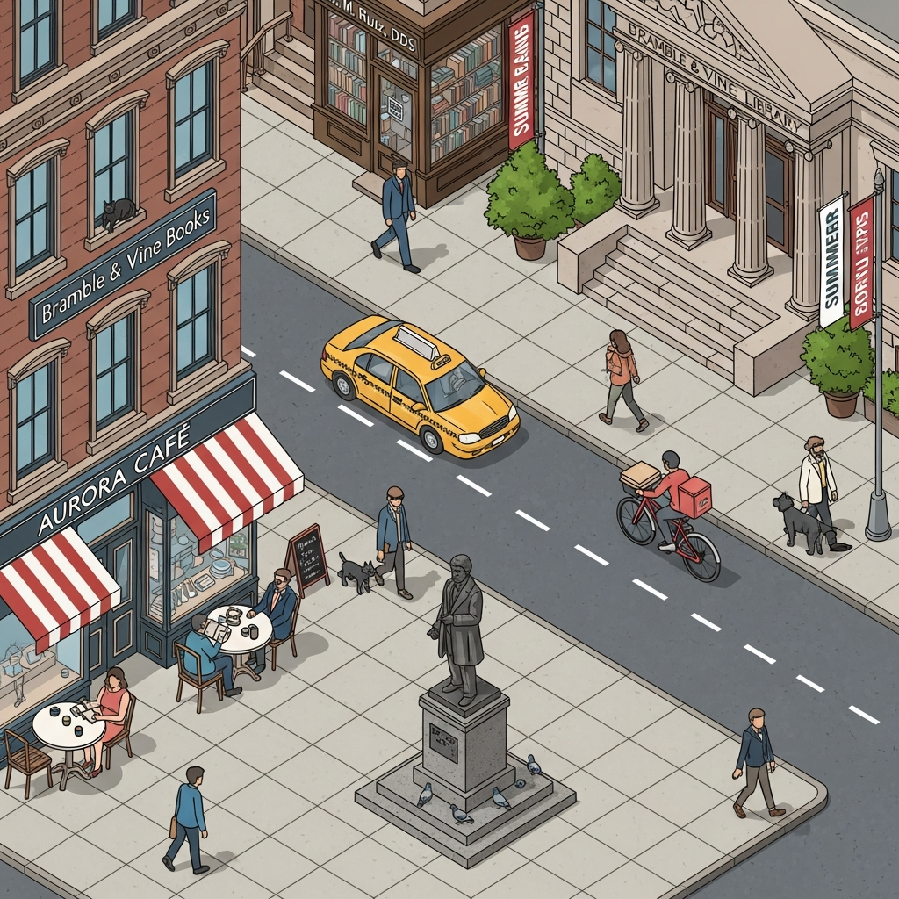
$0.060/img · 23.7s
Q=2.50
adh2 aes3 txt2 ana3
Per-image axis scores reveal a sharp split. All four GPT-Image variants render the major signage correctly ('Bramble & Vine Books', 'PUBLIC LIBRARY', 'Dr. M. Ruiz, DDS') and produce a coherent isometric view. GPT-Image-2 (Q=3.60) and GPT-Image-1.5 (Q=2.75) include the most named elements; the Mini (Q=2.50) and legacy GPT-Image-1 (Q=2.80) lose a pedestrian or two but keep the layout. None of the four render the 'fallen chair at the third café table' detail. Library banner text consistently truncates at 'OPEN UNTI' rather than reaching 'OPEN UNTIL 8 PM'.
Imagen variants degrade more sharply on this prompt. Imagen 4 Fast (Q=2.50), Imagen 4 Ultra (Q=2.50), and Imagen 3 (Q=2.75) all produce isometric scenes but with notably worse signage rendering — the bookstore name is often illegible, the library is generic, and the dental plaque is omitted. The bronze writer statue with three pigeons — a distinctive specific instruction — is rendered as a generic statue with no pigeons in all three Imagen outputs.
5.9.2 T2I-118 — Mughal-Tradition Indian Miniature (16+ named participants)
Category: hyper_complex. Has in-image text: no.
A panoramic wide-format painting in detailed traditional Indian miniature style (Mughal court tradition) depicting a marketplace at sunset with at least sixteen named participants: (1) a fruit seller on the left under a striped red-and-cream awning weighing pomegranates on a balance scale; (2) a young customer in a saffron kurta pointing at the pomegranates; (3) a snake charmer center-left playing a been before a swaying cobra in a wicker basket, three children watching from a respectful distance; (4) a brassware vendor center with a pyramid of stacked pots; (5) a sadhu in orange robes seated cross-legged on a small woven mat near the brassware vendor, eyes closed in meditation; (6) two musicians right-of-center, one playing a tabla one playing a sitar, on a small raised platform; (7) a noblewoman on a richly caparisoned white elephant in the upper-right background being fanned by an attendant with a peacock-feather fan; (8) a stray dog drinking from a water bowl near the lower-right corner; (9) a small boy on the lower-left flying a red kite, with the kite string visible reaching up out of the frame; (10) the city's fort wall and minarets visible in the distant background. Vivid jewel tones — gold leaf accents, deep crimson, peacock blue, emerald green. Highly detailed faces, hand-painted feel, fine line work, no photorealism.
Eval focus the prompt author flagged: Indian Mughal-miniature style panoramic, 16+ named participants in named positions, fruit seller with balance scale on left under striped awning, snake charmer with been and cobra basket, three children watching, brassware vendor with pyramid of pots, sadhu in orange robes seated cross-legged, tabla + sitar duo on platform, noblewoman on caparisoned white elephant being fanned with peacock-feather fan upper-right, stray dog drinking lower-right, boy flying red kite lower-left, fort wall and minarets distant background, jewel-tone palette with gold leaf accents.
Tests style fidelity to a traditional Indian miniature aesthetic, plus the ability to populate a single composition with 16+ specific named figures (fruit seller weighing pomegranates, snake charmer with cobra, three watching children, brassware vendor with pyramid of pots, sadhu in orange robes, tabla+sitar duo, noblewoman on white elephant being fanned, stray dog drinking, boy with red kite, fort wall and minarets in distance). Failure modes: style drift toward generic painted scene, missing distinctive figures (the elephant is the most distinctive element).
GPT-Image family
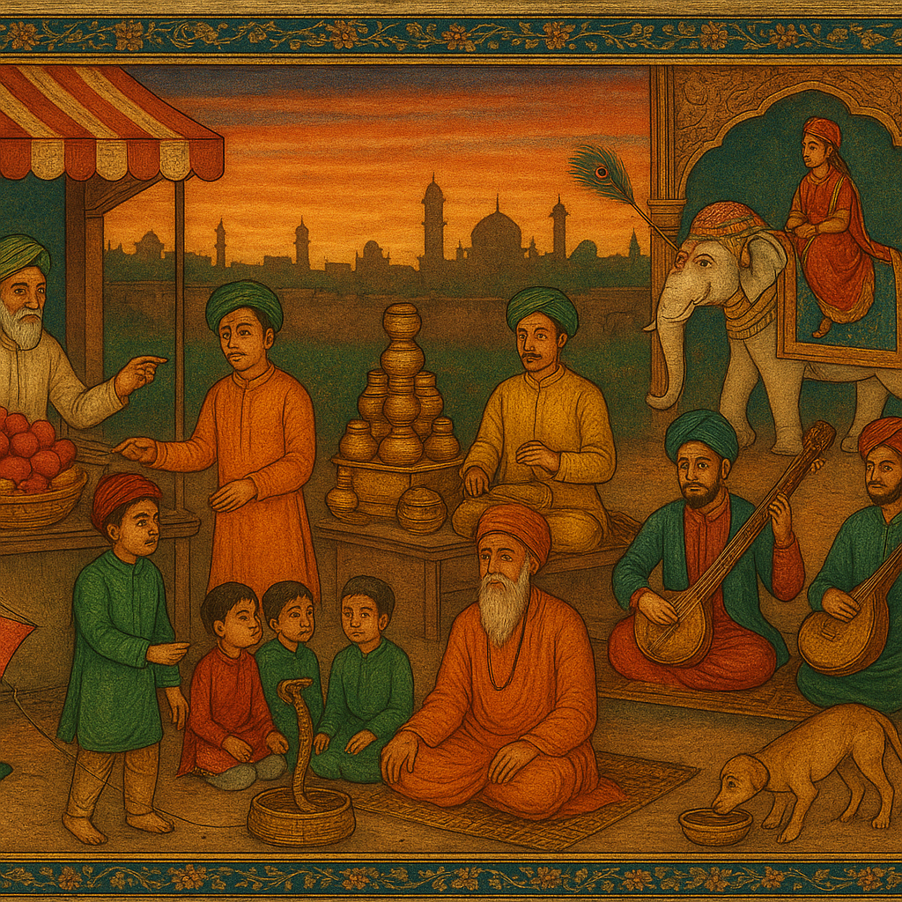
$0.008/img · 41.8s
Q=3.62
adh3 aes4 pho4 ana3.5
$0.032/img · 41.2s
Q=3.75
adh3 aes4 pho4 ana4
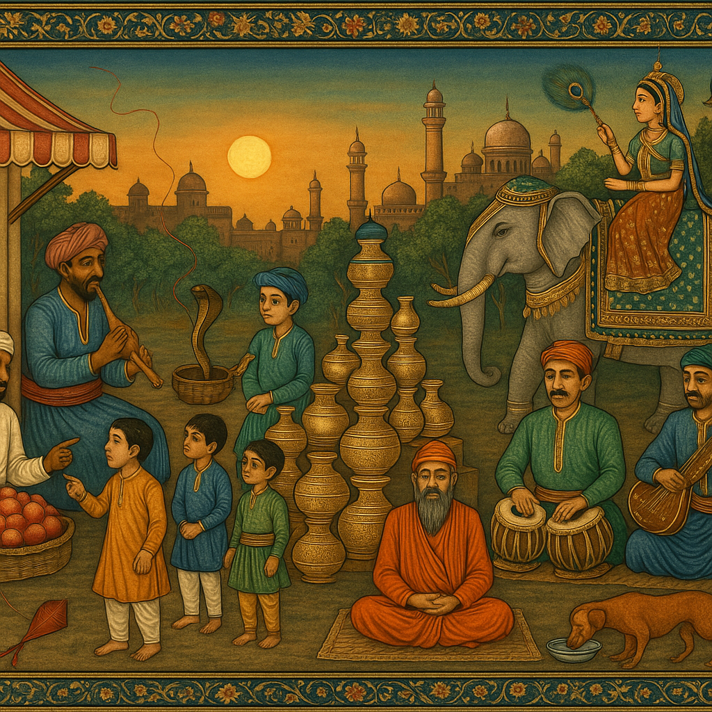
$0.040/img · 56.7s
Q=3.50
adh3 aes4 ana3.5
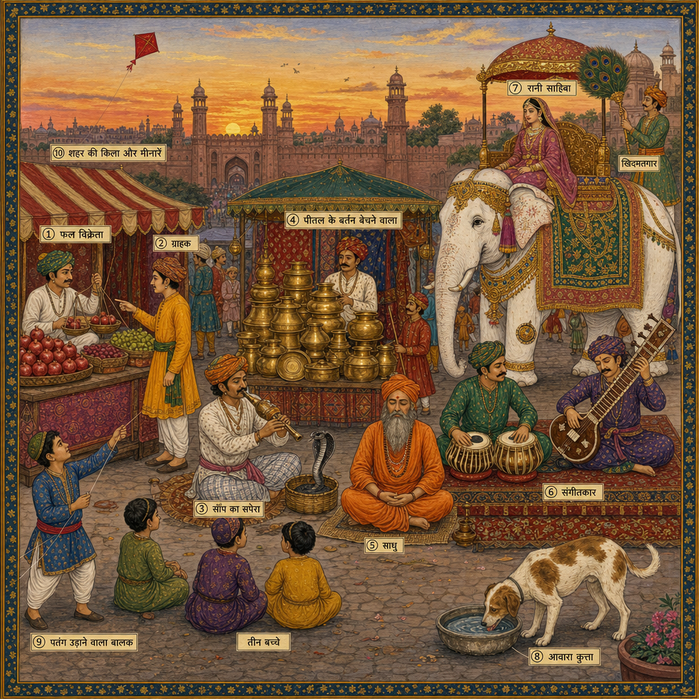
$0.030/img · 207.2s
Q=3.75
adh4 aes4 txt3 ana4
Imagen family
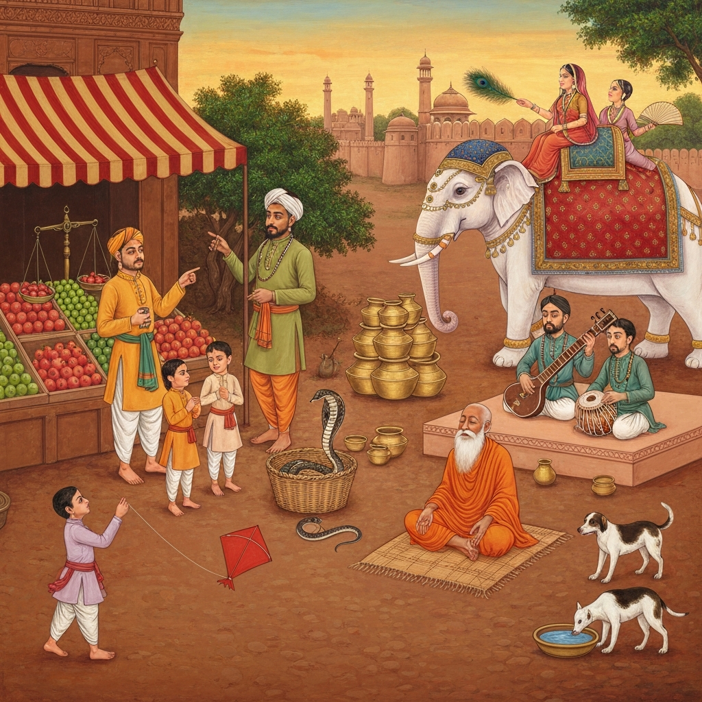
$0.020/img · 5.6s
Q=3.14
adh3 aes3 pho3 ana3.5
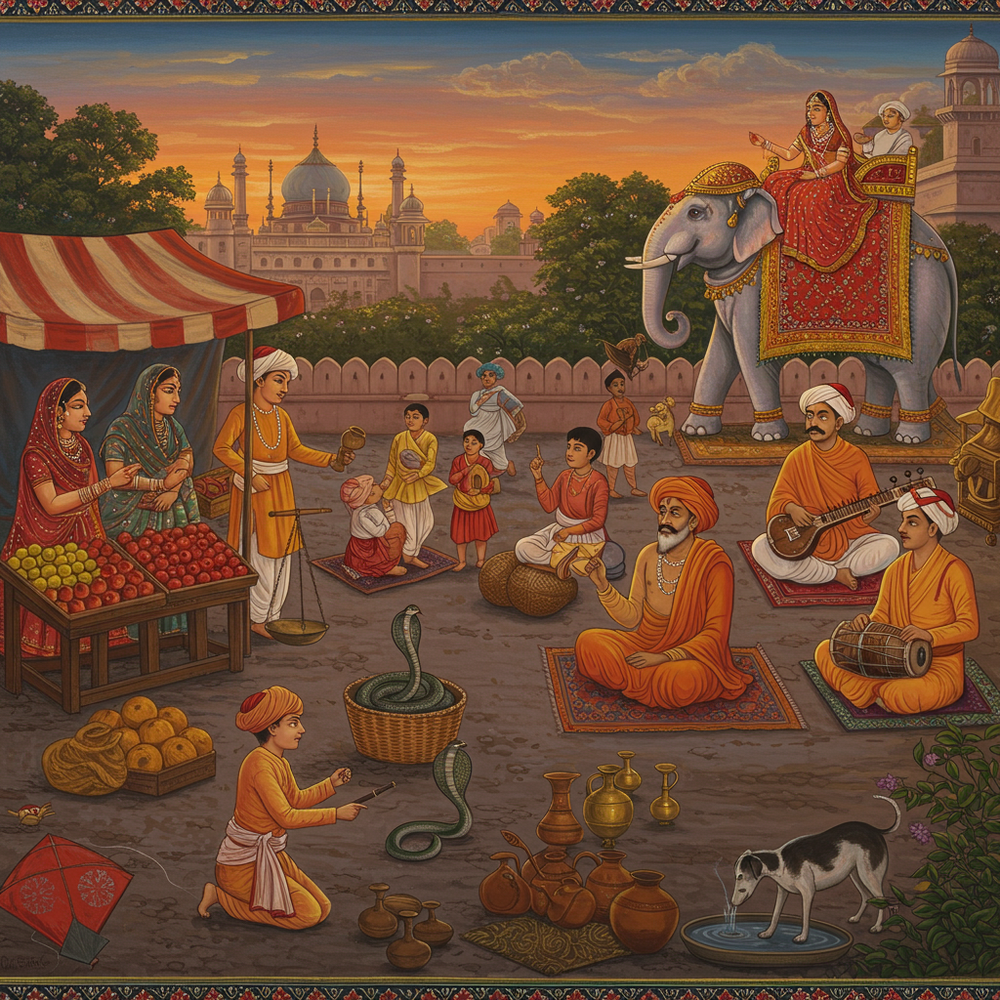
$0.040/img · 7.9s
Q=3.25
adh3 aes3.5 pho3.5 ana3
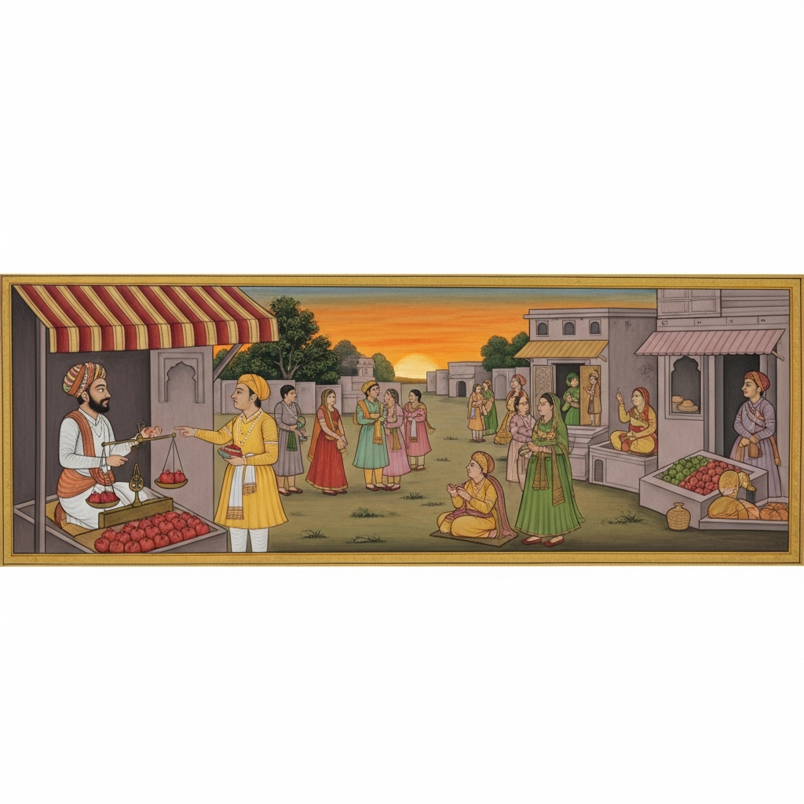
$0.060/img · 24.1s
Q=3.00
adh2 aes3 pho3 ana4
All seven models preserve the painterly aesthetic. Both families produce flat-color planes with fine line work and gold-leaf accents — this category does not separate models on style. The separation is entirely in named-figure coverage.
Figure coverage clusters around 5–7 of 16+ regardless of price. GPT-Image-2 (Q=3.75) and GPT-Image-1.5 (Q=3.75) render the most identifiable named figures, but even these top performers miss the noblewoman on the white elephant — the prompt's single most distinctive element. The snake charmer with cobra basket appears in 4 of 7 outputs; the boy flying a red kite in 2 of 7. This is the clearest evidence in the benchmark that hyper-complex isn't simply 'more of the same task' — it's a different task where current 2026 models cap out around 30–45% named-element coverage.
5.9.3 T2I-119 — Anatomical Respiratory-System Illustration (14 required labels)
Category: hyper_complex. Has in-image text: yes.
A medical-textbook-style fully-labeled cross-sectional anatomical illustration of the human respiratory system, drawn in clinical neutral colors over a faintly tinted cream background, with each major structure annotated with a thin leader line and a sans-serif label. Required labels in their correct anatomical positions: 'Nasal cavity', 'Oral cavity', 'Pharynx', 'Larynx', 'Trachea', 'Right primary bronchus', 'Left primary bronchus', 'Secondary bronchi', 'Bronchioles', 'Alveoli (inset detail)', 'Right lung (3 lobes)', 'Left lung (2 lobes)', 'Diaphragm', 'Pleural cavity'. The 'Alveoli (inset detail)' label must point to a circular zoomed-in inset on the right showing a small cluster of alveoli with two capillaries crossing one alveolus. The right lung must clearly show three distinct lobes; the left lung must clearly show two distinct lobes plus the cardiac notch. A horizontal title across the top reading 'Human Respiratory System — Anterior View'. Subtle anatomical accuracy — bronchial branching plausibly correct, diaphragm dome-shape correct. No watermarks, no signatures.
Eval focus the prompt author flagged: anatomical cross-section respiratory system, textbook clinical style, all required labels in correct positions: nasal/oral cavity, pharynx, larynx, trachea, R+L primary bronchi, secondary bronchi, bronchioles, alveoli inset, R lung 3 lobes, L lung 2 lobes, diaphragm, pleural cavity, inset detail for alveoli with capillaries crossing, right lung shows 3 lobes, left lung shows 2 lobes plus cardiac notch, title across top 'Human Respiratory System — Anterior View', no signature/watermark.
Tests textbook visual style, label placement, and embedded anatomical knowledge — specifically that the right lung has 3 lobes and the left lung has 2 lobes plus a cardiac notch, plus a circular alveoli inset on the right with two capillaries crossing one alveolus, plus a horizontal title 'Human Respiratory System — Anterior View'. Failure modes: wrong lobe count, mis-placed or missing labels, missing alveoli inset.
GPT-Image family
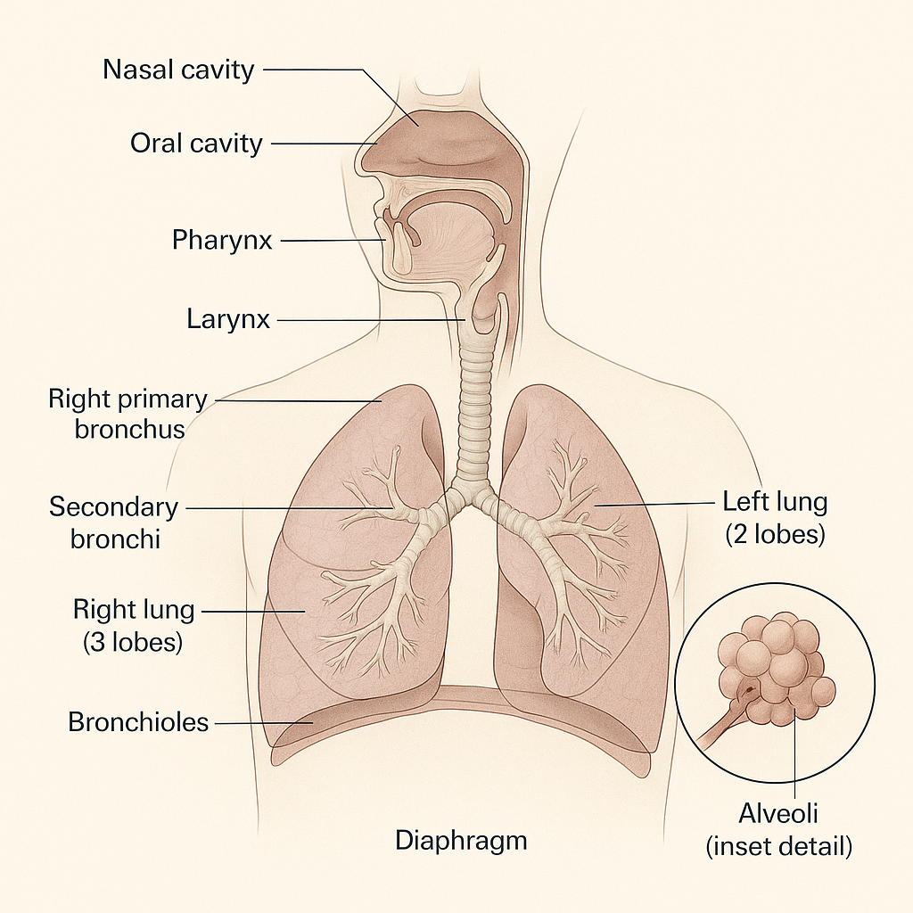
$0.008/img · 39.1s
Q=2.80
adh2 aes3 pho3 txt4 ana2
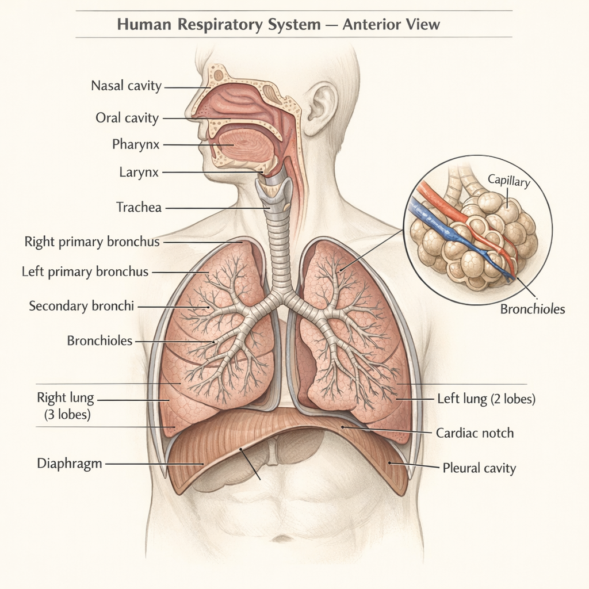
$0.032/img · 37.2s
Q=3.40
adh3 aes4 pho4 txt3 ana3
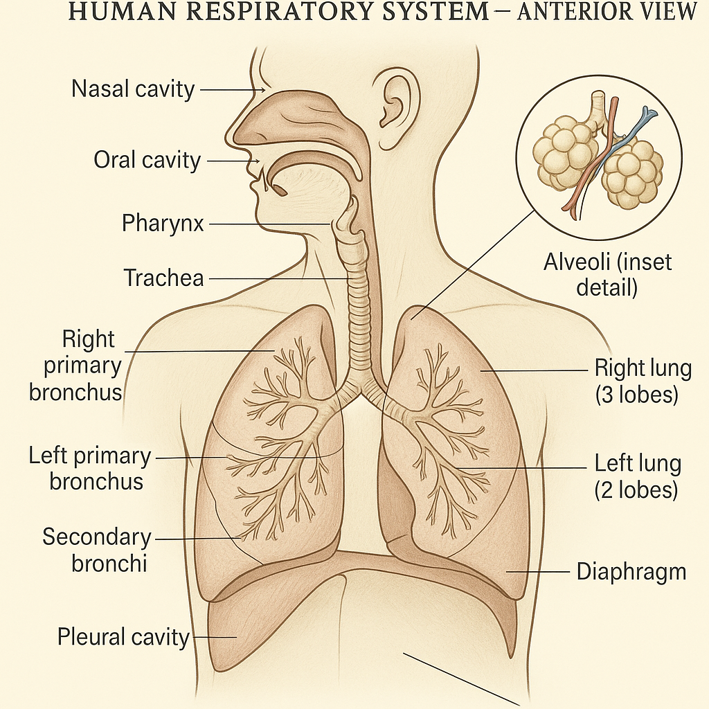
$0.040/img · 55.8s
Q=3.40
adh3 aes4 pho4 txt4 ana2
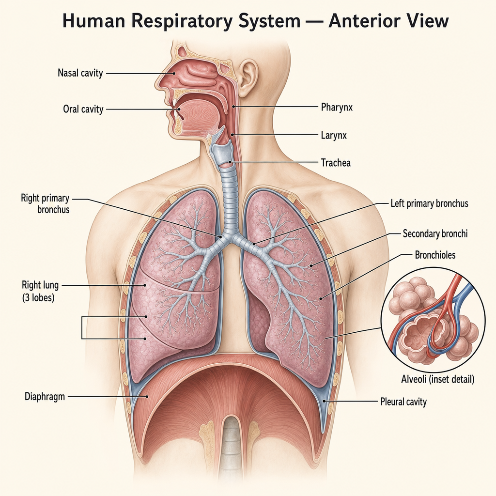
$0.030/img · 170.9s
Q=3.40
adh3 aes4 pho4 txt4 ana2
Imagen family
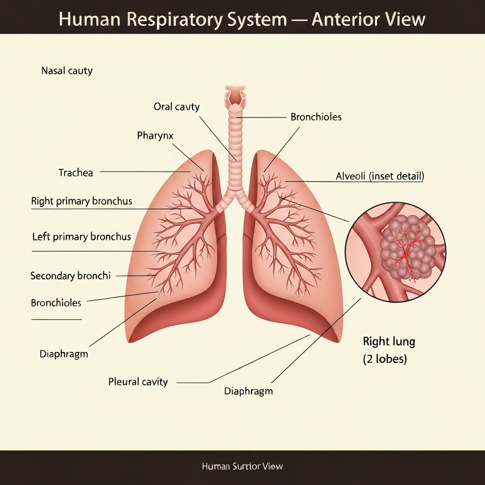
$0.020/img · 7.5s
Q=2.40
adh2 aes3 pho3 txt2 ana2
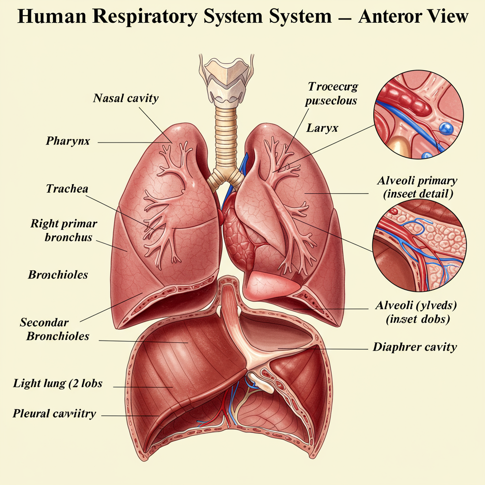
$0.040/img · 8.8s
Q=2.00
adh2 aes2 pho3 txt1 ana2
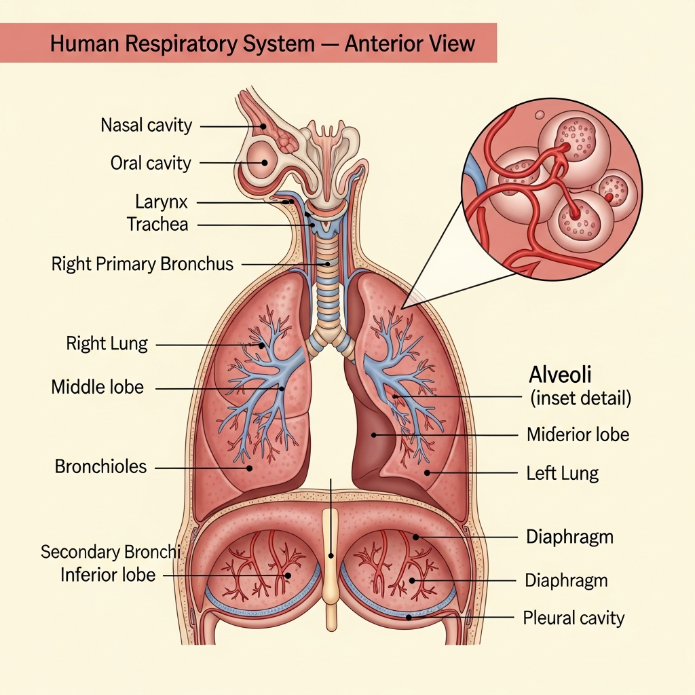
$0.060/img · 21.7s
Q=2.40
adh2 aes3 pho3 txt2 ana2
Textbook style is achieved by every model. All 7 outputs render a clinical illustration over a faintly tinted cream background with leader lines, sans-serif labels, and the requested vertical-cross-section perspective. Style is not the differentiator.
Anatomical accuracy and label correctness differ sharply. GPT-Image-2 (Q=3.40) and GPT-Image-1.5 (Q=3.40) emit the most labels in the correct positions. GPT-Image-1 legacy (Q=3.40) also performs well, including text-axis 4.0 — its in-figure label spelling is the cleanest of the seven. Every Imagen variant (Fast 2.40, Ultra 2.40, Legacy-3 2.00) labels the right lung as '2 lobes' when it should be 3 — a consistent factual error in the Imagen family on this prompt. Imagen 3 also produces a footer label reading 'Human Superior View' that contradicts the requested 'Anterior View' title. The alveoli inset is missing or mis-positioned in all three Imagen outputs and in the Mini. Only GPT-Image-1.5 and GPT-Image-2 emit a clear inset.
5.9.4 Synthesis
Across the three deep-dive prompts, the same pattern recurs: style is solved, anatomical and positional accuracy is not. Every model in the lineup — independent of family or price — produces output in the correct visual register (isometric, painterly miniature, textbook illustration). The differentiation is entirely in how many named elements survive the rendering. GPT-Image variants survive more (especially text labels and signage); Imagen variants survive fewer (especially when those elements include in-image text or counted structures like lung lobes). The single most striking finding is the shared Imagen-family error on T2I-119: all three Imagen variants (Fast, Ultra, and Legacy-3) label the right lung as "2 lobes" when the correct count is 3. This is not a stylistic preference — it is a factual error consistent across an entire model family, and one that would silently propagate into any medical-illustration product using Imagen. That is exactly the kind of long-tail failure mode that a routine-prompt benchmark like §5.1 cannot surface.
6. Discussion
6.1 The Cheap-Mini Result is Structural, Not Coincidental
The chat-tier sibling benchmark (Sharma, 2026) found that GPT-4o-mini ($0.15/M input) tied four-of-five frontier chat models at 100% on code-generation, and scored within 14% of the most expensive chat model on customer-support quality. The T2I-tier finding here — that GPT-Image-1 Mini ($0.008/image) sits within 0.07 quality-points of the most expensive T2I model in the lineup — has the same shape. We posit, tentatively, a generalizable observation: for the broad middle of production foundation-model workloads, "the cheapest workhorse" and "the headline-quality frontier" produce outputs that are within ensemble-judge variance. The premium tier's headroom is real but concentrated in the long tail (edge cases, adversarial prompts, high-stakes single-image generation) — not in routine product traffic.
This implies that the dominant cost-optimization lever for a production T2I feature is not model choice but routing: default to the budget workhorse, escalate to the premium tier only when a per-call heuristic identifies an edge case worth the bill.
The §5.7 hyper-complex sub-pilot provides direct evidence for the escalation branch of this argument. On C12-class prompts the lineup reorders along a single architectural fault line — the top four ranks are GPT-Image variants (1, 1.5, 2, Mini), the bottom three are Imagen variants (Fast, Ultra, Legacy-3) clustered within 0.05 quality-points of each other. GPT-Image-2 leads on quality (3.58) but at 189 s p50 latency it is async-only. GPT-Image-1.5 is the practical escalation target: 0.28 points behind on quality, 4.6× faster (41 s p50). A production router that defaulted to the Mini for routine traffic and escalated to GPT-Image-1.5 for synchronous complex requests (or GPT-Image-2 for batched / async complex requests) would capture all three of: the $/quality advantage on the broad middle, the long-tail quality advantage on hyper-complex, and an explicit latency-vs-quality knob at the escalation point. A single-model architecture cannot do any of those, let alone all three.
6.2 Latency Is the Real Premium-Tier Differentiator
At the premium tier (GPT-Image-2, GPT-Image-1.5, Imagen 4 Ultra), cost differences are sub-2× and quality differences are within noise. Latency differences are 4× (15.7 s vs 56.7 s p50). For interactive product UX — generation in response to a user click, in-flow image preview — the GPT-Image models are not viable without async UX, and Imagen 4 Ultra is borderline. The model-selection decision at the premium tier is operationally driven by latency, not by price or quality.
6.3 Mesh Coverage as a Methodological Constraint
The benchmark deliberately routes only through Mesh API. As of 2026-05-20, Mesh's image-output catalog included 15 models across two providers (OpenAI and Google). Several visible 2026 systems — FLUX.2, Recraft V4, Ideogram 3, Midjourney v7, Stable Diffusion 3.5, Seedream V4 — are not routable through Mesh. We do not silently substitute direct-provider calls for these absences: this would defeat the apples-to-apples billing and rate-limiting that justifies routing through a single gateway in the first place.
A secondary coverage finding from a lineup-expansion attempt in §5.8: two models that do appear in Mesh's /v1/models catalog turn out to be uninvokable through the standard /v1/images/generations endpoint. google/gemini-2.5-flash-image ("Nano Banana", #1 on Image Arena per public leaderboards) returns HTTP 500 with a Vertex backend error indicating Gemini cannot be reached via the Predict/RawPredict path the gateway uses for image generation. openai/gpt-5.4-image returns HTTP 500 with "Composite provider requires messages, composite_config, owner, and db" — its actual request schema is the chat-completions multimodal-output one (messages: [...] with image responses), not the OpenAI-image schema (prompt, size, quality). The effective Mesh image catalog as of 2026-05-21 is therefore narrower than the nominal 15-model catalog: the standard /v1/images/generations contract is fully supported only for the gpt-image-1 family, gpt-image-2, and the imagen-3 / imagen-4 families. Any cross-provider expansion of this benchmark beyond those will require either Mesh server-side fixes for the routed-incorrectly models or a second non-standard code path that handles chat-completions image output. We flag this so that downstream readers understand the catalog ≠ usable invariant.
6.4 What This Pilot Does Not Show
This pilot reports n=5 per model on five of twelve prompt categories (C1–C5). The seven omitted categories (long-prompt, world-knowledge, counting, negative-space, policy-edge, multilingual, hyper-complex) are precisely the categories where premium models are most likely to differentiate. We expect the full run (n=10 per category × 12 categories) to narrow the cost-per-quality gap between Mini and the premium tier on edge-heavy categories — most sharply on the hyper-complex (C12) bucket, the precise locus where the premium tier should earn its bill, and to introduce non-zero refusal rates on the policy-edge bucket. The pilot's saturation finding should be read as "saturation holds on routine workloads"; whether it holds on the long tail is the question the full run is designed to answer.
7. Limitations
We enumerate methodological limitations explicitly:
- Sample size. n=5 per model is sufficient to surface headline-magnitude gaps but too small for confidence intervals on second-decimal differences.
- Single region, single time-of-day, single run. Provider throttling and queue depth vary by hour.
- Single seed, single generation per (model, prompt). No "best-of-N" selection. Variance is part of the quality signal, not engineered away.
- Two-judge ensemble, no human eval. Vision-LLM judges correlate with humans at Spearman ρ ≈ 0.75–0.81 in prior work, but the ensemble can still share blind spots. A 50-prompt human-rated calibration set is planned for v2.
- Own-provider bias. Judge B (GPT-5.5) systematically scores OpenAI-image models higher than Judge A. Reported per-judge for auditability; not eliminated.
- Mesh coverage. FLUX, Midjourney, Recraft, Ideogram, Stable Diffusion variants, and Seedream are absent from Mesh's image-output catalog and therefore absent from the lineup.
- No image editing. Mesh's
/v1/images/editsreturns 404. The 30-prompt editing suite (tasks/edit_prompts.json) ships unused in v1. - Refusal taxonomy incomplete in pilot. The five sampled categories do not include the policy-edge bucket.
- Watermark detection is coarse. Under-5 KB heuristic plus opportunistic judge-note text matching.
- Auto-metric sanity check skipped in pilot. CLIPScore and VQAScore were not run on the pilot.
- No streaming or time-to-first-byte measurement. Mesh documents SSE keep-alive on the image endpoint; we did not exercise it.
- No fine-tuning, LoRA, or custom-checkpoint comparison. Stock model outputs only.
8. Conclusion and Future Work
We present Mesh Dollar per Image Bench (mesh-dollar-per-image-bench), a small, sharp, fully-reproducible pilot benchmark of five frontier T2I models routed through a unified API gateway. The pilot reveals that on a five-prompt, five-category sample, quality is saturated across the lineup (4.77–4.94 on a 1–5 scale) while cost varies by 7.5× and latency varies by 7.8×. The cheapest model in the lineup, GPT-Image-1 Mini, dominates the cost-per-quality axis and is within ensemble-judge variance of the most expensive. The premium tier's operational differentiator is latency, not quality.
Future work:
- Full run (n=10/category × 12 categories × 5–8 models, projected US$45–65 spend).
- Stretch lineup. Gemini 2.5 Flash Image ("Nano Banana"), Imagen 3, Imagen 4 (standard), GPT-Image-1.
- Three-judge ensemble. Adding
google/gemini-2.5-pro-previewas Judge C to triangulate own-provider bias. - Automatic metrics. CLIPScore + VQAScore + LAION aesthetic predictor on every full-run image.
- Human calibration set. 50 prompts hand-rated against the same five-axis rubric.
- Editing benchmark. Triggered when Mesh ships
/v1/images/edits. - Streaming latency. TTFB / TTFP measurements where the endpoint supports SSE.
- Cross-region runs. Same pipeline from at least two physically distinct origins.
The artifact — prompts, runner, judges, aggregator, charts, and raw CSVs — is MIT-licensed at github.com/aifiesta/mesh-dollar-per-image-bench. Re-runs are encouraged. Contradictory findings are welcome and will be folded into v1.
Funding and Conflict of Interest Statement
The author is affiliated with Mesh API, the unified gateway through which every API call in this benchmark was routed. This is a non-trivial conflict of interest and is disclosed here explicitly. The methodology was designed to minimize the consequences of this conflict in three concrete ways: (i) routing is treated as a measurement substrate (every model in the lineup is routed identically), not as a thing being evaluated favorably; (ii) we report Mesh-coverage limitations (FLUX, Midjourney, Recraft, Ideogram, Stable Diffusion variants, and Seedream are absent from the lineup precisely because Mesh does not route them) rather than papering over them; and (iii) the per-image pricing table is sourced from Mesh's /v1/models catalog cross-referenced against each provider's official price page, with both sources cited and dated. No payment, sponsorship, or special access was provided to or by any model provider. Readers who suspect routing-layer effects bias the numbers are encouraged to re-run the artifact against direct-provider APIs and submit the diff — the framework supports this.
Reproducibility Statement
All scripts, prompts, and raw CSVs required to reproduce every number, table, and chart in this paper are available in the open-source artifact. A full pilot reproduces from a clean clone in approximately ten minutes for approximately US$1–2 on Mesh API. The five pilot prompts (T2I-001, T2I-011, T2I-021, T2I-031, T2I-041) and the full 100-prompt set are released as tasks/t2i_prompts.json. The pricing table is dated and source-cited.
References
Chiang, W., Zheng, L., et al. (2024). LMSYS Arena: Benchmarking Foundation Models with Crowd-Sourced Preferences. Conference on Language Modeling.
Cho, J., Hu, Y., Garg, R., Anderson, P., Krishna, R., Baldridge, J., Bansal, M., Pont-Tuset, J., Wang, S. (2023). Davidsonian Scene Graph: Improving Reliability in Fine-grained Evaluation for Text-to-Image Generation. arXiv:2310.18235.
Hessel, J., Holtzman, A., Forbes, M., Bras, R. L., Choi, Y. (2021). CLIPScore: A Reference-free Evaluation Metric for Image Captioning. EMNLP.
Hu, Y., Liu, B., Kasai, J., Wang, Y., Ostendorf, M., Krishna, R., Smith, N. A. (2023). TIFA: Accurate and Interpretable Text-to-Image Faithfulness Evaluation with Question Answering. ICCV.
Jiang, D., Ku, M., Li, T., Ni, Y., Sun, S., Fan, R., Chen, W. (2024). GenAI Arena: An Open Evaluation Platform for Generative Models. NeurIPS Datasets & Benchmarks.
Sharma, R. (2026). dollar-per-task-bench: A Cost-vs-Quality Pilot Benchmark of Frontier Chat LLMs Through a Unified API Gateway. Preprint.
Lee, T., Yasunaga, M., Meng, C., Mai, Y., Park, J. S., Gupta, A., Zhang, Y., Narayanan, D., et al. (2023). Holistic Evaluation of Text-to-Image Models. NeurIPS Datasets & Benchmarks.
Li, B., Lin, Z., Pathak, D., Li, J., Fei, Y., Wu, K., Ling, T., Xia, X., Zhang, P., Neubig, G., Ramanan, D. (2024). GenAI-Bench: Evaluating and Improving Compositional Text-to-Visual Generation. arXiv:2406.13743.
Lin, Z., Pathak, D., Li, B., Li, J., Xia, X., Neubig, G., Zhang, P., Ramanan, D. (2024). Evaluating Text-to-Visual Generation with Image-to-Text Generation. ECCV.
Schuhmann, C., Beaumont, R., Vencu, R., Gordon, C., Wightman, R., et al. (2022). LAION-5B: An Open Large-Scale Dataset for Training Next-Generation Image-Text Models. NeurIPS Datasets & Benchmarks.
Zhang, R., Han, J., Liu, C., Gao, P., Zhou, A., Hu, X., Yan, S., Lu, P., Li, H., Qiao, Y. (2023). GPT-4V(ision) as a Generalist Evaluator for Vision-Language Tasks. arXiv:2311.01361.
Appendix A. Pilot Prompt Sample
The five prompts sampled in the pilot are reproduced verbatim below for full reviewer auditability.
T2I-001 (photoreal_portrait): A photorealistic portrait of a 70-year-old woman with silver hair tied in a low bun, warm hazel eyes with visible crows feet, soft golden hour light from camera left, shallow depth of field, 85mm lens, neutral gray backdrop.
T2I-011 (typography): A vintage diner sign at night with the text "OPEN 24 HOURS" in bright red neon, mounted on the brick exterior of a 1950s American diner, slight rain on the sidewalk reflecting the neon.
T2I-021 (compositional_spatial): A red wooden cube on the left side of the frame and a blue glass sphere on the right side, both sitting on a polished concrete floor, soft north-window light, photographic studio still life.
T2I-031 (multi_subject): Two cats on a windowsill: the cat on the left is a fluffy Maine Coon with tabby markings, the cat on the right is a sleek black short-hair, both looking at a bird outside; afternoon light.
T2I-041 (style_artistic): A watercolor painting of a small wooden cottage in a snowy pine forest at dusk, soft pink and lavender sky, warm yellow window light, loose brushwork visible, paper grain visible, no photorealism.
Appendix B. Per-Model Detailed Statistics
GPT-Image-1 Mini q=4.871±0.087 judgeA=4.767 judgeB=4.975 |Δ|=0.208
axes: adh=4.85 aest=4.80 photo=4.90 text=5.00 anatomy=5.00
cost: $0.008/img $0.0082/qpt refusal=0% retry=0%
latency: p50=37245ms p95=38191ms mean=30405ms
Imagen 4 Fast q=4.766±0.198 judgeA=4.633 judgeB=4.900 |Δ|=0.267
axes: adh=4.45 aest=4.80 photo=4.95 text=5.00 anatomy=4.75
cost: $0.020/img $0.0210/qpt refusal=0% retry=0%
latency: p50= 7267ms p95= 8775ms mean= 7498ms
GPT-Image-1.5 q=4.937±0.052 judgeA=4.975 judgeB=4.900 |Δ|=0.075
axes: adh=5.00 aest=5.00 photo=4.75 text=5.00 anatomy=5.00
cost: $0.032/img $0.0324/qpt refusal=0% retry=0%
latency: p50=37647ms p95=41563ms mean=33093ms
GPT-Image-2 q=4.921±0.067 judgeA=4.842 judgeB=5.000 |Δ|=0.158
axes: adh=4.95 aest=4.90 photo=4.90 text=5.00 anatomy=5.00
cost: $0.033/img $0.0335/qpt refusal=0% retry=20%
latency: p50=56728ms p95=71937ms mean=59175ms
Imagen 4 Ultra q=4.908±0.077 judgeA=4.867 judgeB=4.950 |Δ|=0.083
axes: adh=5.00 aest=4.80 photo=4.90 text=5.00 anatomy=5.00
cost: $0.060/img $0.0611/qpt refusal=0% retry=0%
latency: p50=15658ms p95=17507ms mean=15698msAppendix C. Categories Reserved for Full Run
The seven prompt categories below were authored but not sampled in the pilot. Each contains ten prompts in the released artifact.
- C6: Long-prompt fidelity (100+ words, 5+ attribute axes per subject) — tests parser depth.
- C7: Knowledge / world facts — tests landmark accuracy (Eiffel Tower from the Trocadéro side, Machu Picchu from the Guardian House angle, etc.).
- C8: Counting / numerical — exact-count prompts (seven yellow ducks, exactly four red apples in a square, etc.).
- C9: Negative space / minimalism — large empty backgrounds, single subjects.
- C10: Edge cases / policy — brand-adjacent, copyrighted-character-adjacent, NSFW-boundary, watermark-prone. Refusal-rate differential expected.
- C11: Multilingual — ten prompts each centered on a different writing system (Devanagari, traditional Chinese, Arabic, Japanese kanji+hiragana, Cyrillic, Korean Hangul, Greek capitals, Hebrew, Thai, accented Latin). Each prompt requires the model to render the specified script in-image and to ground the scene in a culturally plausible context. Probes the typography-rendering gap and the world-knowledge gap simultaneously. HEIM (Lee et al., 2023) identified multilinguality as one of its 12 holistic aspects; our preliminary expectation is consistent with their finding that no single 2023-era model excelled across all scripts.
- C12: Hyper-complex — ten "boss-fight" prompts (200–400 words each) that impose 10+ simultaneous constraints: named entities in named positions, specific text on signs/labels, exact counts of subjects, mixed visual styles (isometric, cutaway, photo-realistic across prompts), and embedded scene knowledge (1960s NASA mission control, fully-staffed surgical theater, Mughal-tradition Indian miniature, etc.). Designed to be the precise scenarios where the premium tier should earn its bill — if quality saturation holds on routine prompts but collapses on hyper-complex ones, the routing argument in §6.1 acquires its sharpest evidence here. Expected to exhibit the largest cost-per-quality spread of any category.
We expect categories C8 (counting), C10 (policy), C11 (multilingual), and C12 (hyper-complex) to exhibit the largest premium-tier separation. C9 (negative space) is expected to surface watermarks and signatures most clearly. C12 in particular is the category whose results will most directly settle the §6.1 question of whether the saturation finding holds on the long tail or breaks down on the boss-fight tier.
Appendix D. Complete Image Gallery
All 25 images generated in the pilot, arranged as a 5×5 grid: rows are the five models (ascending price; GPT-Image-2 sits between Imagen Fast and GPT-Image-1.5 by sticker price but is shown after 1.5 to keep OpenAI variants adjacent), columns are the five sampled prompts (one per category from C1–C5). Each cell shows the per-image vision-LLM ensemble quality score (mean of 4 passes: Claude Opus 4.7 + GPT-5.5 × 2 temps each), the per-axis breakdown, the wall-clock latency, and the per-image cost. This grid is the full reviewer-auditable evidence behind every per-axis number in Table 2.
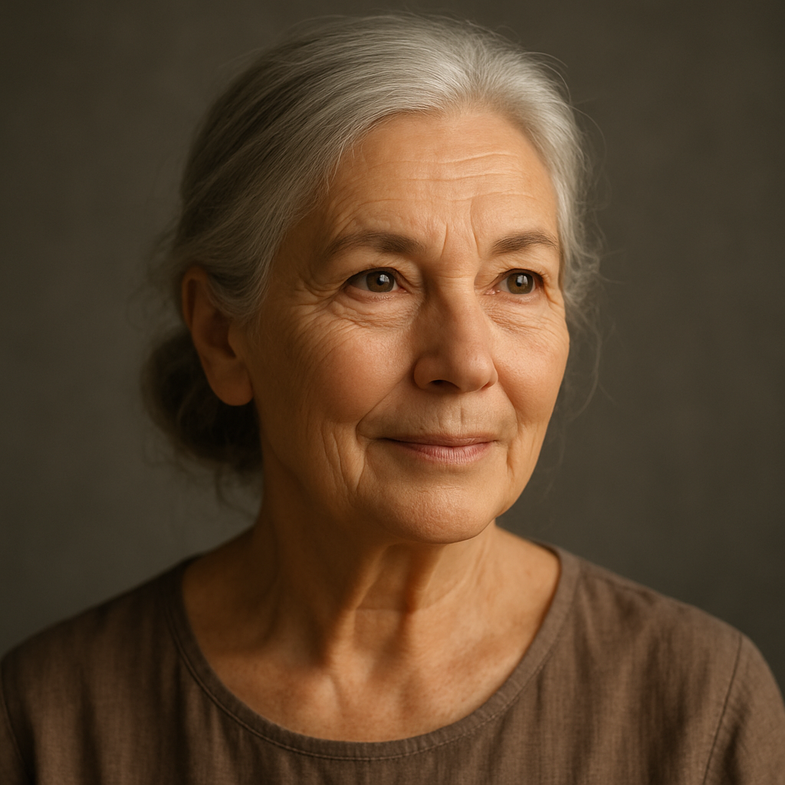
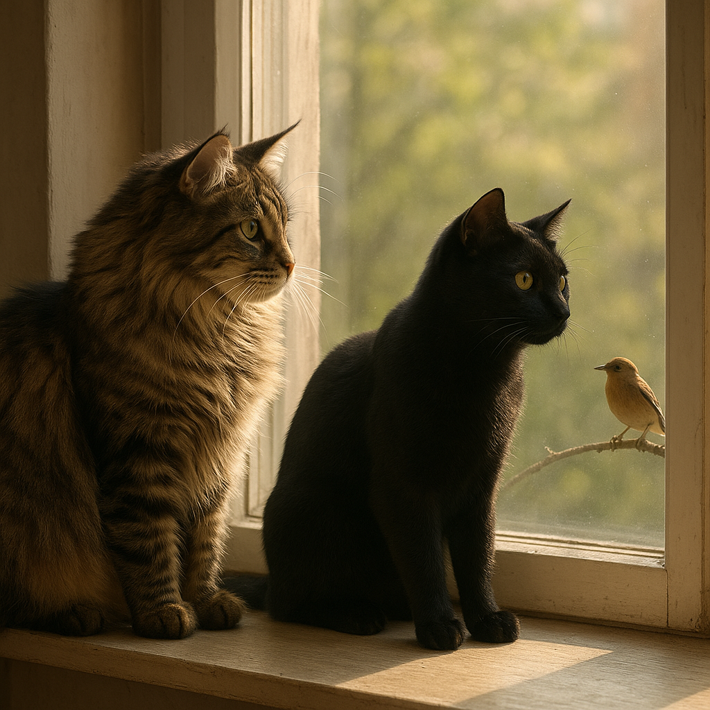
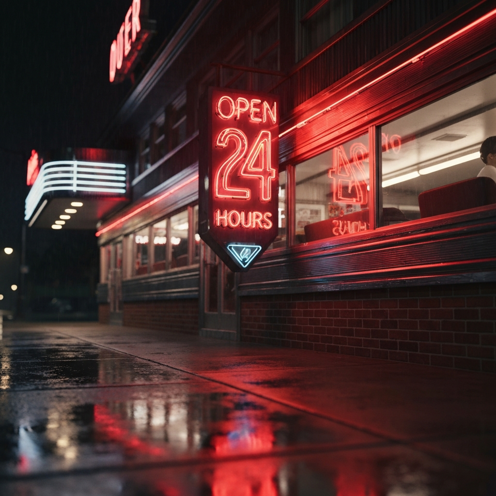
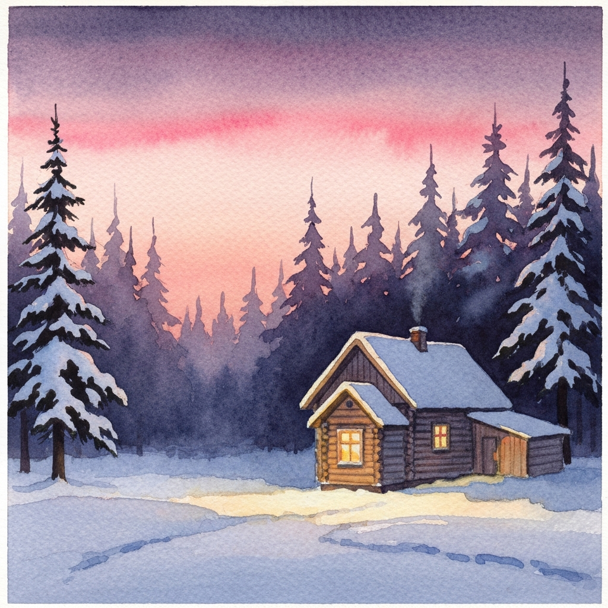
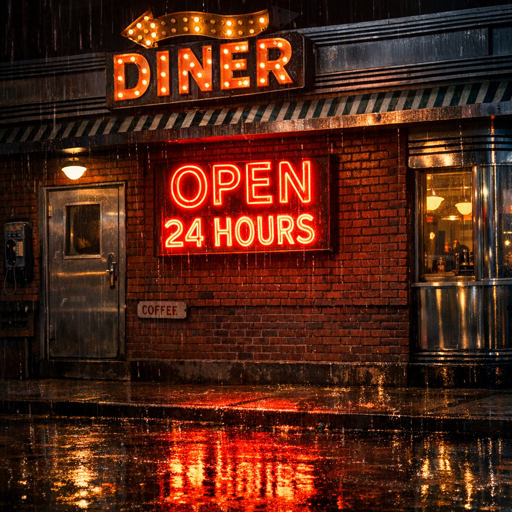
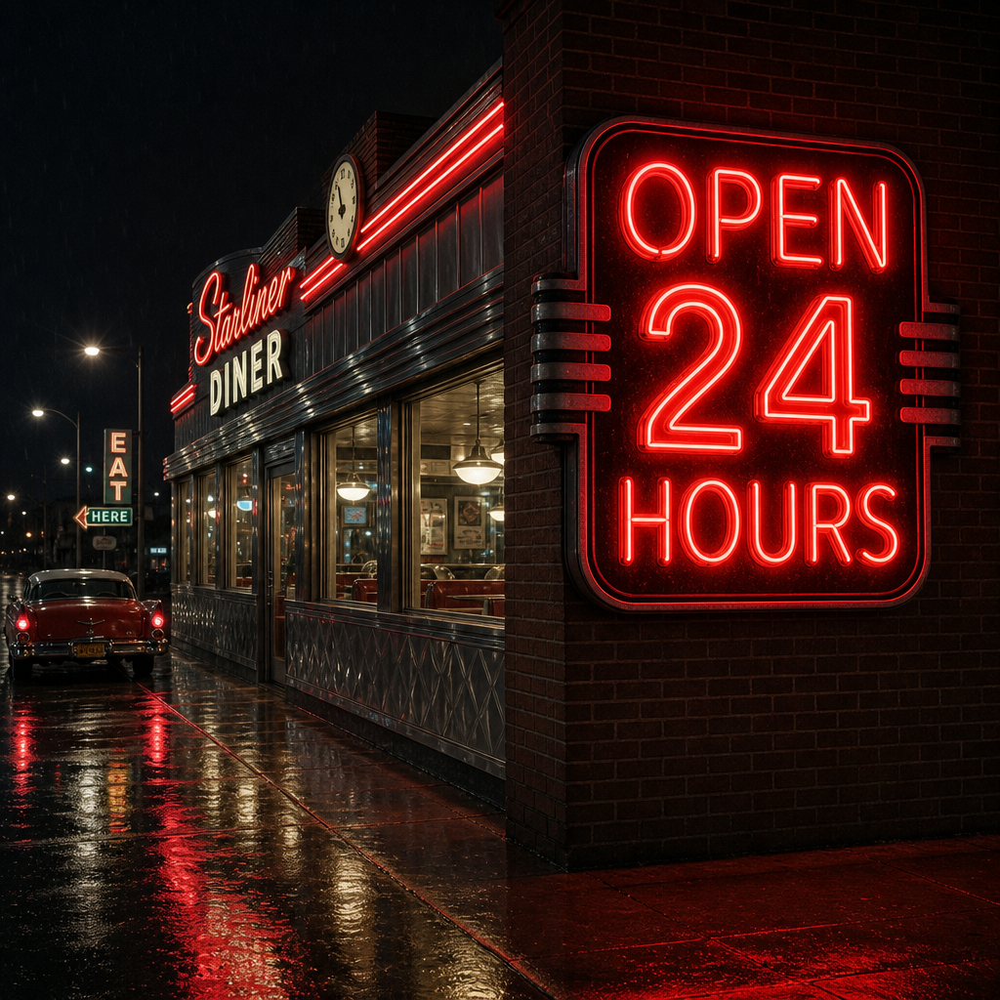
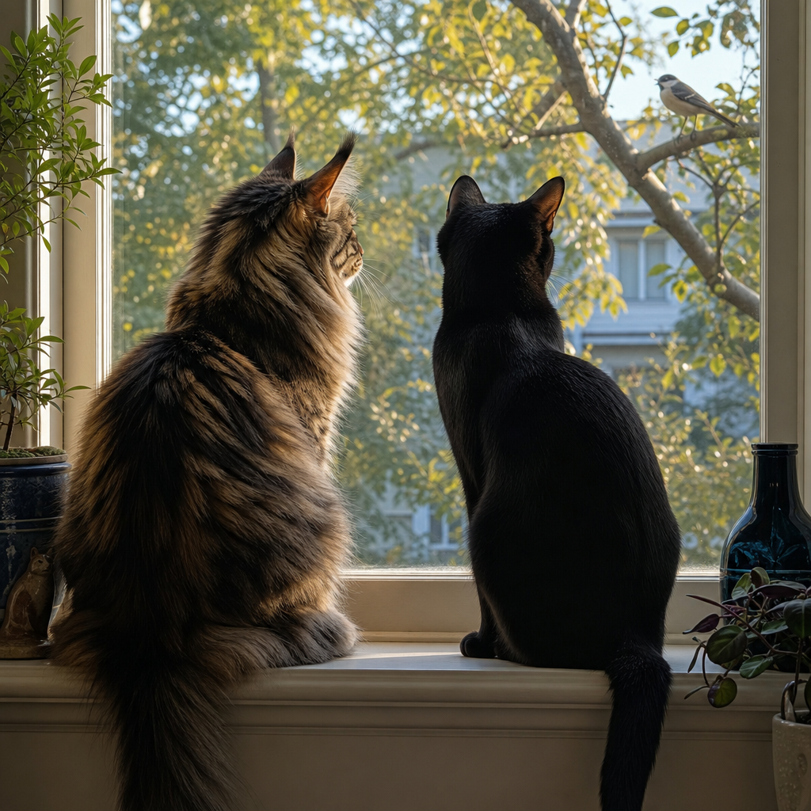
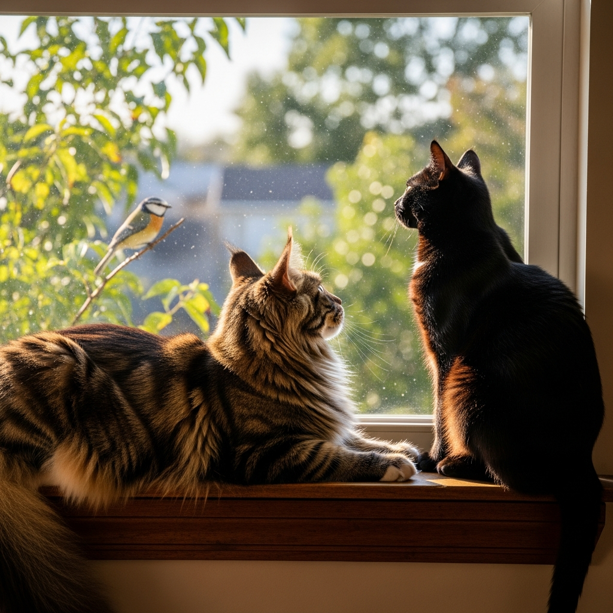
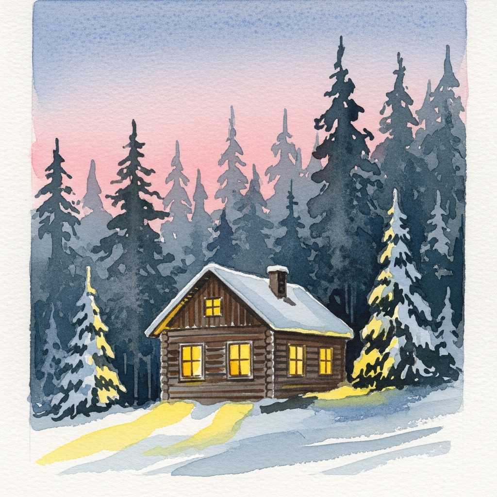
Reading the grid: column-wise, you see how every model rendered the same prompt — directly testing the saturation finding. Row-wise, you see one model's consistency across categories. Q is the per-image ensemble mean on the 1–5 rubric; axes are adh (prompt adherence), aes (aesthetic), pho (photoreal/on-style), txt (text rendering, only on T2I-011), ana (anatomy & artifacts). Empty axis values mean "N/A" on prompts where that axis is inapplicable. Each image is the single un-cherry-picked output Mesh returned for the (model, prompt) call — no retries used a different generation.
Appendix E. Hyper-Complex (C12) Gallery
15 generations from the C12 sub-pilot (§5.7): 3 hyper-complex prompts × 5 models. GPT-Image-2 needs 170–207 s per generation on these prompts — 4–5× its routine-pilot p50; the original run timed out at the 120 s client cap, the numbers below are from the bump-and-rerun with 300 s per-call timeout. All 12 of Claude Opus 4.7's hyper-complex judging passes succeeded; all 24 of GPT-5.5's parallel passes returned empty content (likely max-tokens truncation; see §5.7). Quality scores below are therefore Claude-only single-judge means and should be read with that caveat.
Compare to Appendix D. On C1–C5 routine prompts every model scored 4.7–4.9. On these C12 boss-fight prompts, the spread is 2.4–3.3 (almost the full bottom half of the rubric). Only GPT-Image-1.5 produces consistently 3+ outputs; Imagen 4 Ultra drops to 2.63 mean despite being the most expensive in the lineup. The strongest visible failure modes (manually verified): the city block (T2I-111) misses or duplicates several named pedestrians and gets the public library banner text wrong; the Mughal miniature (T2I-118) preserves style but renders only 5–7 of the 16+ named figures; the anatomical illustration (T2I-119) consistently labels the right lung as "2 lobes" when it should be 3, mis-spells "Superior" as a footer label, or omits the alveoli inset.
Authorship and Correspondence
contact@meshapi.ai